<!doctype html>
<html lang="en">
<head>
  <meta charset="utf-8">
  <meta name="viewport" content="width=device-width, initial-scale=1">
  <title>arxiv digest — 2026-10-03</title>
  <style>
:root {
  --bg: #ffffff;
  --fg: #1f2328;
  --muted: #59636e;
  --border: #d0d7de;
  --card: #f6f8fa;
  --link: #0969da;
}
body {
  max-width: 980px;
  margin: 0 auto;
  padding: 2rem 1rem 5rem;
  font-family: -apple-system, BlinkMacSystemFont, "Segoe UI", Helvetica, Arial, sans-serif;
  line-height: 1.55;
  color: var(--fg);
  background: var(--bg);
}
a { color: var(--link); }
img { max-width: 100%; height: auto; }
pre, code { background: var(--card); border-radius: 6px; }
pre { padding: 1rem; overflow-x: auto; }
blockquote { border-left: 4px solid var(--border); padding-left: 1rem; color: var(--muted); }
details { margin: 0.6rem 0; }
summary { cursor: pointer; font-weight: 600; }
.paper-figures-scroll {
  display: flex;
  gap: 1rem;
  overflow-x: auto;
  overscroll-behavior-x: contain;
  padding: 0.75rem 0.25rem 1rem;
  margin: 1rem 0 1.25rem;
  border-top: 1px solid var(--border);
  border-bottom: 1px solid var(--border);
  scroll-snap-type: x proximity;
}
.paper-figure-card {
  flex: 0 0 min(260px, 72vw);
  scroll-snap-align: start;
  background: var(--card);
  border: 1px solid var(--border);
  border-radius: 12px;
  padding: 0.55rem;
}
.paper-figure-card img {
  display: block;
  width: 100%;
  max-height: 240px;
  object-fit: contain;
  background: white;
  border-radius: 8px;
}
.paper-figure-caption {
  display: block;
  margin-top: 0.5rem;
  color: var(--muted);
  font-size: 0.85rem;
}
.figure-strip-hint {
  color: var(--muted);
  font-size: 0.9rem;
  margin-bottom: -0.3rem;
}
</style>
  <!-- MathJax: renders $...$ inline math and $$...$$ display math, plus
       \(...\) and \[...\]. Loaded from the official CDN; works offline
       once cached. Configured to skip code/pre blocks so arxiv IDs that
       look like dollar amounts don't get mangled. -->
  <script>
    window.MathJax = {
      tex: {
        inlineMath: [['$', '$'], ['\\(', '\\)']],
        displayMath: [['$$', '$$'], ['\\[', '\\]']],
        processEscapes: true,
        processEnvironments: true
      },
      options: {
        skipHtmlTags: ['script', 'noscript', 'style', 'textarea', 'pre', 'code'],
        ignoreHtmlClass: 'tex2jax_ignore',
        processHtmlClass: 'tex2jax_process'
      }
    };
  </script>
  <script id="MathJax-script" async
    src="https://cdn.jsdelivr.net/npm/mathjax@3/es5/tex-chtml.js"></script>
</head>
<body>
<header style="background-color: #333; color: white; padding: 15px; margin-bottom: 20px;">
  <h1 style="margin: 0; font-size: 24px;">
    <a href="https://ochelpan.github.io/arXiv_clean/" style="color: white; text-decoration: none;">Main</a>
  </h1>
</header>

<h1>Daily arXiv Report</h1>

<hr>
<p>
<a href="index.html">← Index</a>
 · <a href="papers_07.html">← Previous</a> · <a href="papers_09.html">Next →</a>
</p>
<hr>

<h2>Papers 141–160</h2>
<p><a id="paper-2610.02093"></a></p>
<h3 id="one-way-quantum-symmetric-private-information-retrieval-protocol-from-a-single-database-server-using-nisq-devices"><a href="http://arxiv.org/abs/2610.02093v1">One-Way Quantum Symmetric Private Information Retrieval Protocol From A Single Database Server Using NISQ Devices</a></h3>
<p><strong>Authors:</strong> Xiang Zou, H. F. Chau<br>
<strong>Type:</strong> theory · <strong>Category:</strong> quantum information and computing · <strong>PDF:</strong> <a href="https://arxiv.org/pdf/2610.02093v1">https://arxiv.org/pdf/2610.02093v1</a><br>
<strong>Analysis basis:</strong> full PDF text, analyzed in chunks
<strong>Topic relevance:</strong> <code>quantum measurements</code> <strong>1/5</strong></p>
<div class="figure-strip-hint">↔ Scroll figures horizontally</div>
<div class="paper-figures-scroll">
<figure class="paper-figure-card">
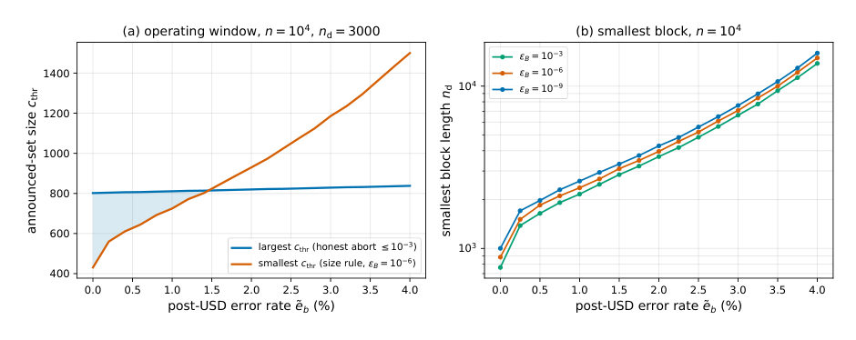
<figcaption class="paper-figure-caption"><b>Fig 1.</b> FIG. 2. Operating window of the announced set at n = 104, for a depolarizing channel with post-USD error rate ˜eb, known-rate pk = pUSD/(1 −˜eb), and ϵEC = ϵ⊥= 10−6 for the decoding-failure and ⊥probabilities. (a) At nd = 3000: the smallest cthr allowed by the size rule at ϵB = 10−6 (red) and the largest one for which an honest Bob aborts with probability at most 10−3 in Step 8 (blue); the protocol operates in the shaded region. (b) The smallest block length nd for which the window is open. Both panels use the exact binomial law of the overlap ojj′, the decoding radius t at the exact binomial quantile, and τ = ⌈log2 Vol(cthr, t) + log2(1/ϵEC)⌉.</figcaption>
</figure>
<figure class="paper-figure-card">
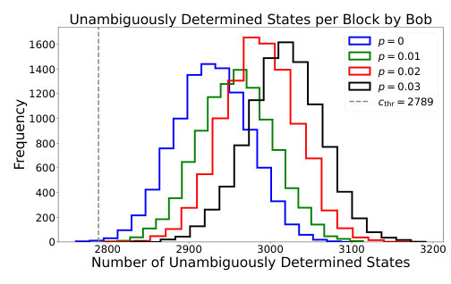
<figcaption class="paper-figure-caption"><b>Fig 2.</b> FIG. 3. Histogram of the number of conclusive positions per block in a typical run, for n = nd = 104 and depolarizing noise p ∈{0, 0.01, 0.02, 0.03}. The dashed line is the set size cthr = 2789, for which an honest Bob aborts with probability 10−3 over a noiseless channel; it obeys the size rule of Eq. (15) at ϵB = 10−6 for all four noise levels, with τ as in the exact evaluation of Table III.</figcaption>
</figure>
<figure class="paper-figure-card">
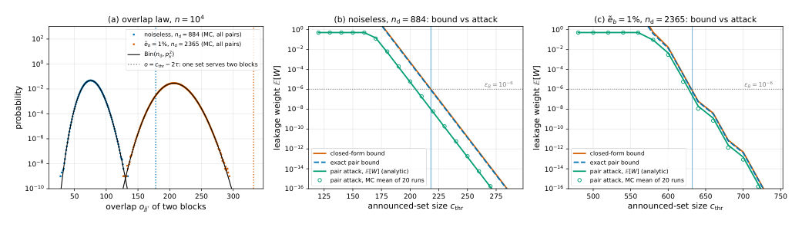
<figcaption class="paper-figure-caption"><b>Fig 3.</b> FIG. 4. Overlap law and tightness of Eq. (14) at n = 104. (a) Overlap of all pairs of blocks (dots) against Bin(nd, p2 k) (lines); dotted lines mark ojj′ = cthr −2τ, where one set would serve two blocks. (b), (c) Leakage weight of the pair attack (green: circles are means over the 20 databases, the line averages over the law of the largest overlap) against the bound (orange: Eq. (14); dashed: its exact form of Appendix D), over a noiseless channel and at ˜eb = 1%. The vertical line is the smallest cthr allowed by the size rule.</figcaption>
</figure>
<figure class="paper-figure-card">
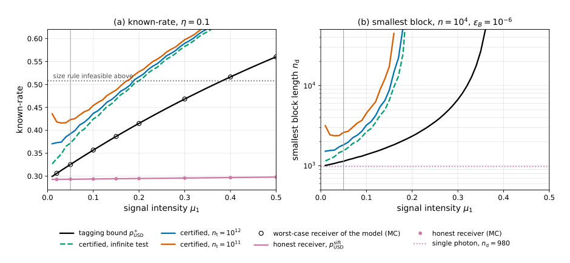
<figcaption class="paper-figure-caption"><b>Fig 4.</b> FIG. 5. The price of weak coherent pulses at transmittance η = 0.1 over a noiseless channel. (a) Known-rate against the signal intensity µ1: the tagging bound p+ USD of Lemma VII.2 (black line), attained by the worst-case receiver of the model, which collects every emitted photon and always knows the bit of a multi-photon pulse (circles, Monte-Carlo); the certified known-rate pWCP k of Proposition G.2 for an infinite test (dashed) and for tests of nt = 1012 and 1011 pulses, with µ2 = µ1/10, intensity probabilities (0.5, 0.4, 0.1), ϵPE = ϵcert = 10−6 and the test counts at their expected values; and the conclusive rate psift USD of the honest receiver [pink line, Eq. (23); dots, photon-level...</figcaption>
</figure>
<figure class="paper-figure-card">
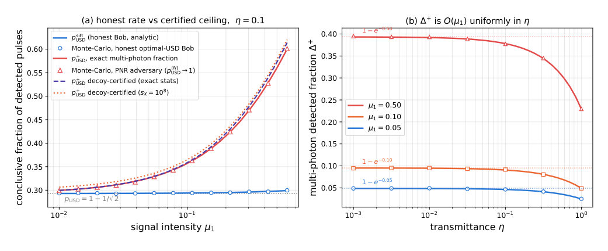
<figcaption class="paper-figure-caption"><b>Fig 5.</b> FIG. 6. Photon-level Monte-Carlo validation of the effective USD rates. (a) Conclusive fraction of detected data pulses vs signal intensity µ1 at η = 0.1: honest optimal-USD Bob (circles) against the closed form of Lemma VII.1 (solid blue), and the photon-number-resolving adversary of Lemma VII.2 (triangles), which saturates p+ USD computed from the exact multi-photon fraction (solid red). The decoy-certified p+ USD with exact statistics (dashed) and with sX = 108 X-sifted detections (dotted) lie slightly higher, showing the residual looseness of the three-intensity estimator. (b) Multi-photon detected fraction ∆+</figcaption>
</figure>
</div>

<p><strong>Summary.</strong> This paper presents a quantum protocol for Symmetric Private Information Retrieval (SPIR) that works even when the communicating parties are limited to noisy, memory-less NISQ devices. It achieves information-theoretic security by leveraging BB84 states and random permutations. This work is significant because it provides a practical, resource-constrained solution to a fundamental problem in quantum data access.</p>
<p><strong>Why it may be interesting.</strong> The focus on NISQ constraints and the integration of quantum communication security with information retrieval makes it highly relevant for quantum optics and quantum information theorists designing practical quantum protocols.</p>
<details>
<summary>Detailed structure</summary>
<p><strong>Main problem.</strong> The paper addresses the challenge of achieving Symmetric Private Information Retrieval (SPIR) from a single database server using quantum communication.</p>
<p><strong>Main result.</strong> It demonstrates that provably secure QSPIR is possible under the strict constraint of NISQ devices, requiring only passive linear-optical measurements alongside standard QKD components.</p>
<p><strong>Method.</strong> The protocol combines principles from Quantum Key Distribution (QKD) with cryptographic techniques like random permutations and hashing to ensure index privacy.</p>
<p><strong>Model / system.</strong> The system utilizes single photons transmitting BB84 states over a one-way quantum channel. The security analysis is tailored for the NISQ regime, meaning no long-term quantum memory is assumed for the communicating parties.</p>
<p><strong>Key observables.</strong> Secrecy against eavesdroppers, database privacy (quantified by an explicit size rule), and user privacy.</p>
<p><strong>Important parameters / regimes.</strong> Database size ($10^4$-bit example), required database privacy ($10^{-6}$), and block size (around a thousand qubits).</p>
<p><strong>Assumptions / limitations.</strong> The security proof assumes the eavesdropper is all-powerful, while the user and server are restricted to NISQ devices. The protocol is shown to work for single photons over a tolerated noise channel.</p>
<p><strong>Figures summary.</strong> Figure 6 validates the effective Unambiguous State Discrimination (USD) rates against signal intensity ($\mu_1$) and transmittance ($\eta$), while Figure 7 compares measured conclusive counts for the honest receiver versus an adversary using Monte Carlo simulations.</p>
<p><strong>Paper structure.</strong> The paper establishes the problem, details a multi-step protocol involving BB84 transmission, joint random permutation, and hashing. It then provides security proofs and validates the resource requirements using simulation and theoretical bounds.</p>
</details>
<details>
<summary>Abstract</summary>
<p>Symmetric private information retrieval (SPIR) lets an inquirer obtain one specific bit only, without leaking any information about its index to the database owner. With a single server, this is impossible for parties with unrestricted quantum power. We show that it becomes possible, with information-theoretic security, when the server and the user hold only noisy intermediate-scale quantum (NISQ) devices without long-term quantum memory and measure each qubit on arrival, while the eavesdropper remains all-powerful; this is a stricter form of the memory restriction of the bounded- and noisy-quantum-storage models. The server sends BB84 states one way; the user discriminates them unambiguously and so knows a random subset of the bits. After a joint random permutation into blocks, the user announces the conclusive locations of one privately chosen block, and the server hashes and takes a random parity of these locations in every block; the permutation makes it exponentially unlikely that one set of locations fits two blocks. We prove secrecy against the eavesdropper, database privacy through an explicit size rule for the announced set, and user privacy against a server who prepares the prescribed BB84 states and announces truthfully, exactly for single photons and up to a small multi-photon term over a tolerated noise channel. The only addition to BB84 equipment is a passive linear-optical measurement with one ancillary mode. For a $10^{4}$-bit database and database privacy $10^{-6}$, blocks of about a thousand qubits suffice over a tolerated noise channel for a user who applies the prescribed measurement; certifying an arbitrary memoryless user and committing to the permutation need larger auxiliary transmissions, which we quantify with finite keys. Database privacy extends to decoy-state weak coherent pulses, and simulations show that the bound is nearly tight.</p>
</details>
<p><sub><a href="#top">↑ back to top</a></sub></p>

<p><a id="paper-2610.02025"></a></p>
<h3 id="operational-transformation-rates-of-quantum-states"><a href="http://arxiv.org/abs/2610.02025v1">Operational transformation rates of quantum states</a></h3>
<p><strong>Authors:</strong> Giulia Mazzola, Renato Renner<br>
<strong>Type:</strong> theory · <strong>Category:</strong> quantum information and computing · <strong>PDF:</strong> <a href="https://arxiv.org/pdf/2610.02025v1">https://arxiv.org/pdf/2610.02025v1</a><br>
<strong>Analysis basis:</strong> full PDF text, analyzed in chunks
<strong>Topic relevance:</strong> <code>quantum measurements</code> <strong>1/5</strong></p>
<div class="figure-strip-hint">↔ Scroll figures horizontally</div>
<div class="paper-figures-scroll">
<figure class="paper-figure-card">
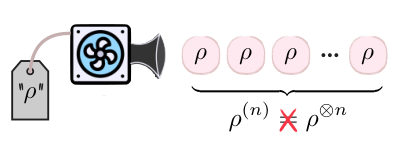
<figcaption class="paper-figure-caption"><b>Fig 1.</b> Figure 1: A ρ-source is expected to emit many copies of a state ρ. While tomography may consistently identify the individual outputs with ρ, it cannot in general certify that their joint state ρ(n) has the exact tensor power form ρ⊗n.</figcaption>
</figure>
<figure class="paper-figure-card">
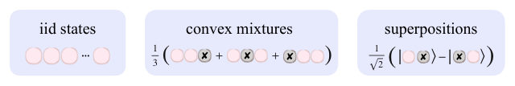
<figcaption class="paper-figure-caption"><b>Fig 2.</b> Figure 2: Illustration of almost-iid states. Each circle represents a single-copy system. The pink circles correspond to the iid components, represented by ρ, while the crossed circles indicate the defective and possibly correlated subsystems. A precise formulation is given in Definition 1.21.</figcaption>
</figure>
<figure class="paper-figure-card">
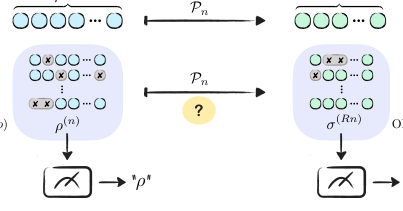
<figcaption class="paper-figure-caption"><b>Fig 3.</b> Figure 3: Asymptotic state transformation rates characterize the conversion of n copies of ρ into approximately Rn copies of σ via a protocol Pn consisting of free operations. Traditionally, such pro- tocols are designed for iid input resources ρ⊗n and produce outputs approximating the iid target state σ⊗Rn. In practice, however, multi-copy resources may contain correlated defects that are practically undetectable. States with such defects therefore belong to the operational set of multi-copy states. The question is whether Pn remains effective uniformly over this larger class of resource states.</figcaption>
</figure>
</div>

<p><strong>Summary.</strong> This work re-evaluates quantum resource theories by relaxing the strict assumption that multiple copies of a quantum state are independent and identically distributed. Using an operational viewpoint, the authors define resource sets based on what an experimentalist can measure. They introduce new asymptotic rates that quantify resource transformation capabilities under these realistic, imperfect conditions.</p>
<p><strong>Why it may be interesting.</strong> It provides a rigorous, experimentally grounded framework for resource theories, moving beyond idealized mathematical assumptions to model real-world imperfections in quantum resource utilization.</p>
<details>
<summary>Detailed structure</summary>
<p><strong>Main problem.</strong> The paper addresses the gap between assuming quantum states are independent and identically distributed (iid) when multiple copies are available, versus the operational reality where unknown defects or correlations might exist.</p>
<p><strong>Main result.</strong> It develops operational analogues for asymptotic transformation rates (like entanglement cost) that account for the full, operationally defined class of resource states, rather than just the ideal iid case.</p>
<p><strong>Method.</strong> The authors employ a de Finetti-type argument and define operational sets of states based on what an experimentalist can distinguish via tomography protocols.</p>
<p><strong>Model / system.</strong> The system involves multiple copies of a quantum state $
ho$, leading to a joint $n$-system state $
ho(n)$. The focus is on characterizing the set of states $  ext{OP}(    ext{tom}(\cdot); 
ho)$ that are indistinguishable from a tensor power state.</p>
<p><strong>Key observables.</strong> Operational asymptotic transformation rates, entanglement cost, and distillation rates.</p>
<p><strong>Important parameters / regimes.</strong> The number of copies $n$, and the deviation from the iid assumption (defects/correlations).</p>
<p><strong>Assumptions / limitations.</strong> The definition of the operational set relies on the existence of a 'sensible' tomography protocol $  ext{tom}(\cdot)$.</p>
<p><strong>Figures summary.</strong> Figure 1 shows that tomography cannot certify the joint state is exactly $
ho^{\otimes n}$. Figure 2 illustrates 'almost-iid states' showing the tensor power structure corrupted by defects/correlations. Figure 3 compares iid vs. operational rates.</p>
<p><strong>Paper structure.</strong> The paper moves from identifying the limitation of the iid assumption in practice, to developing the operational framework using de Finetti arguments, and finally applying this framework to define and compare operational asymptotic rates.</p>
</details>
<details>
<summary>Abstract</summary>
<p>Typically, multiple copies of a quantum state are described by a tensor power of that state. However, from an operational point of view, an experimentalist cannot, in general, rule out imperfections at unknown positions or correlations between copies, so assuming independent and identically distributed (iid) copies is not justified a priori. In the following, we relax the iid assumption by considering a whole set of resource states that are fundamentally indistinguishable from a tensor power state, and in that sense look like many copies of the quantum state to the experimentalist. Using a de Finetti-type argument, we show that this operational set of states can asymptotically be represented by almost-iid states. As an application, we introduce operational analogues of asymptotic transformation rates, such as entanglement cost and distillation. This raises the question of whether these rates coincide with their iid counterparts.</p>
</details>
<p><sub><a href="#top">↑ back to top</a></sub></p>

<p><a id="paper-2610.02146"></a></p>
<h3 id="polynomial-time-additive-error-estimation-of-output-probabilities-for-shallow-quantum-circuits"><a href="http://arxiv.org/abs/2610.02146v1">Polynomial-time additive-error estimation of output probabilities for shallow quantum circuits</a></h3>
<p><strong>Authors:</strong> Matthew Coudron, Michael J. Gullans, Jon Nelson, Joel Rajakumar, Shi Jie Samuel Tan<br>
<strong>Type:</strong> theory · <strong>Category:</strong> quantum information and computing · <strong>PDF:</strong> <a href="https://arxiv.org/pdf/2610.02146v1">https://arxiv.org/pdf/2610.02146v1</a><br>
<strong>Analysis basis:</strong> full PDF text, analyzed in chunks
<strong>Topic relevance:</strong> <code>quantum measurements</code> <strong>1/5</strong></p>
<div class="figure-strip-hint">↔ Scroll figures horizontally</div>
<div class="paper-figures-scroll">
<figure class="paper-figure-card">
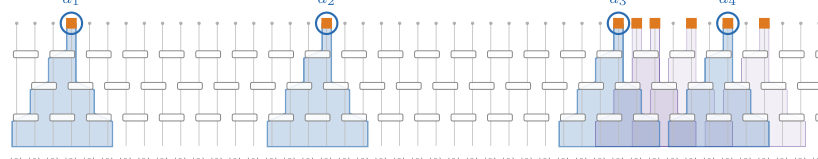
<figcaption class="paper-figure-caption"><b>Fig 1.</b> Figure 1: Depiction of ‘lightcones’ in a 1D quantum circuit. The bad bits of the output distribution agree with x with probability ≤1 −τ. The separation of the blue lightcones illustrates how the probability of a1, a2, a3, a4 all agreeing with x is ≤(1 −τ)4.</figcaption>
</figure>
<figure class="paper-figure-card">
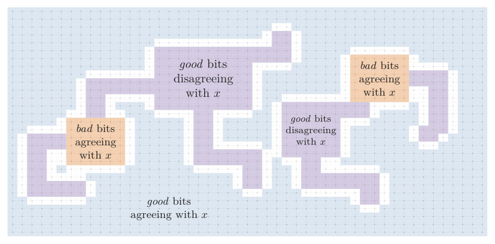
<figcaption class="paper-figure-caption"><b>Fig 2.</b> Figure 2: Depiction of one term in our inclusion-exclusion decomposition. The purple region corresponds to T, which is the source of the decay.</figcaption>
</figure>
</div>

<p><strong>Summary.</strong> This paper introduces a deterministic classical algorithm to estimate the output probability of shallow quantum circuits in polynomial time. It achieves this by employing a sophisticated combination of inclusion-exclusion principles and cluster expansion techniques. This result significantly advances the field by providing an efficient method to analyze quantum circuit outputs for arbitrary connectivity.</p>
<p><strong>Why it may be interesting.</strong> This work provides a powerful classical tool to estimate quantum mechanical probabilities, which is crucial for simulating quantum circuits and understanding the complexity limits of quantum computation.</p>
<details>
<summary>Detailed structure</summary>
<p><strong>Main problem.</strong> The paper develops a deterministic classical algorithm to estimate the output probability $P(x) = |\langle x|U|0^n
angle|^2$ of a shallow quantum circuit $U$ to an additive error $\epsilon$. The goal is to achieve this estimation in time polynomial in $n$ and $1/\epsilon$.</p>
<p><strong>Main result.</strong> A deterministic classical algorithm is presented that achieves polynomial-time estimation of the output probability for constant-depth quantum circuits with arbitrary connectivity, significantly improving upon prior state-of-the-art time complexities.</p>
<p><strong>Method.</strong> The core method combines an inclusion-exclusion decomposition with a cluster expansion technique to bound errors arising from non-peaked regions. This allows the problem to be reduced to efficiently estimating marginal probabilities of 'good' output bits.</p>
<p><strong>Model / system.</strong> The model is an $n$-qubit unitary quantum circuit $U$ characterized by constant depth and gates with bounded fan-in and arbitrary connectivity. The initial state is $|0^n
angle$.</p>
<p><strong>Key observables.</strong> The primary observable is the output probability $P(x) = |\langle x|U|0^n
angle|^2$. Secondary observables include marginal probabilities $P(xS)$ for subsets $S$ of qubits.</p>
<p><strong>Important parameters / regimes.</strong> Key parameters include $n$ (number of qubits), $\epsilon$ (additive error tolerance), and the circuit depth/connectivity structure.</p>
<p><strong>Assumptions / limitations.</strong> The analysis relies on the structure of shallow circuits leading to bounded degree in the connectivity graph and assumes the ability to perform specific calculations (like marginal estimations) within derived polynomial bounds.</p>
<p><strong>Figures summary.</strong> Figure 1 illustrates 'lightcones' bounding the probability of agreement. Figure 2 depicts a term in the inclusion-exclusion decomposition, separating contributions from 'good' and 'bad' bits.</p>
<p><strong>Paper structure.</strong> The paper builds upon prior work by introducing a cluster expansion technique and an inclusion-exclusion argument. It decomposes the probability calculation based on 'bad' and 'good' output bits, leading to a final theorem establishing the polynomial-time algorithm.</p>
</details>
<details>
<summary>Abstract</summary>
<p>We give a deterministic classical algorithm that estimates $|\langle x|U|0^n\rangle|^2$ to additive error $\varepsilon$ in $\mathrm{poly}(n, 1/\varepsilon)$ time, where $U$ is a constant-depth quantum circuit comprised of gates with bounded fan-in and arbitrary connectivity, and $x$ is an arbitrary $n$-bit output string. This improves over prior state-of-the-art algorithms that takes $n^{O(log(n))}$ time for the same task, $n^{O(log(log(n))}$ when $U$ is geometrically local, and $n^{O(1)}$ for 2D geometrically-local circuits.</p>
</details>
<p><sub><a href="#top">↑ back to top</a></sub></p>

<p><a id="paper-2610.00733"></a></p>
<h3 id="smooth-perturbation-theory-and-generic-cantor-spectrum-for-multi-dimensional-monotone-quasiperiodic-operators"><a href="http://arxiv.org/abs/2610.00733v1">Smooth perturbation theory and generic Cantor spectrum for multi-dimensional monotone quasiperiodic operators</a></h3>
<p><strong>Authors:</strong> Ilya Kachkovskiy, Leonid Parnovski, Roman Shterenberg<br>
<strong>Type:</strong> theory · <strong>Category:</strong> disordered systems and neural networks · <strong>PDF:</strong> <a href="https://arxiv.org/pdf/2610.00733v1">https://arxiv.org/pdf/2610.00733v1</a><br>
<strong>Analysis basis:</strong> full PDF text, analyzed in chunks
<strong>Topic relevance:</strong> <code>Frenkel-Kontorova</code> <strong>1/5</strong></p>
<div class="figure-strip-hint">↔ Scroll figures horizontally</div>
<div class="paper-figures-scroll">
<figure class="paper-figure-card">
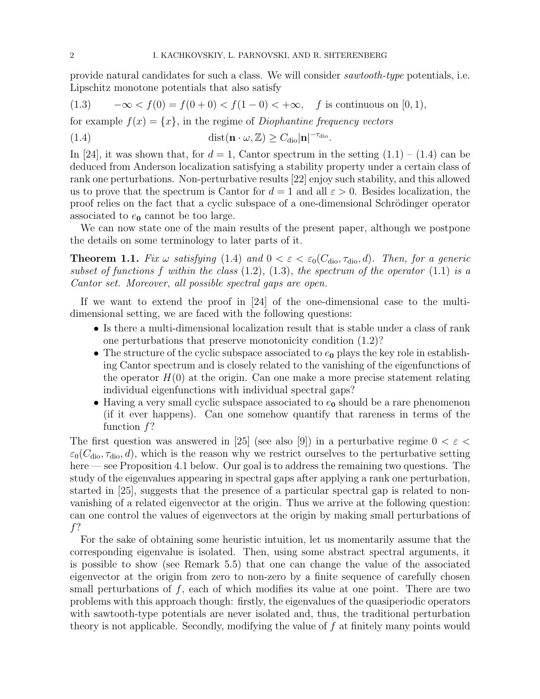
<figcaption class="paper-figure-caption"><b>Fig 1.</b> Low-resolution page preview, page 2</figcaption>
</figure>
<figure class="paper-figure-card">
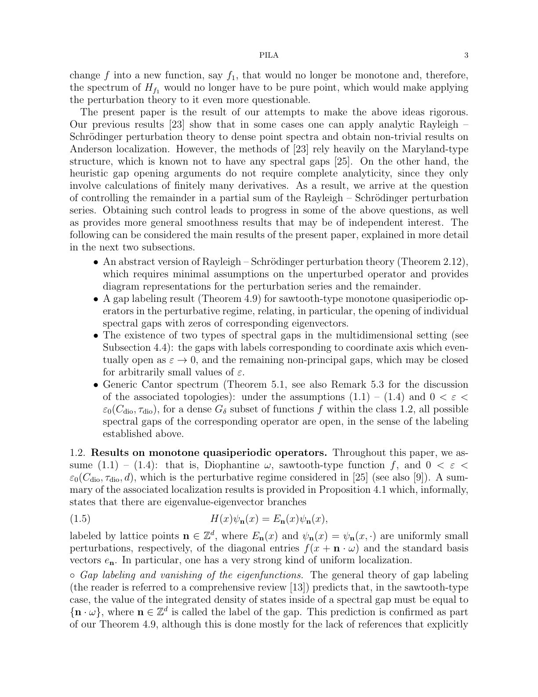
<figcaption class="paper-figure-caption"><b>Fig 2.</b> Low-resolution page preview, page 3</figcaption>
</figure>
<figure class="paper-figure-card">
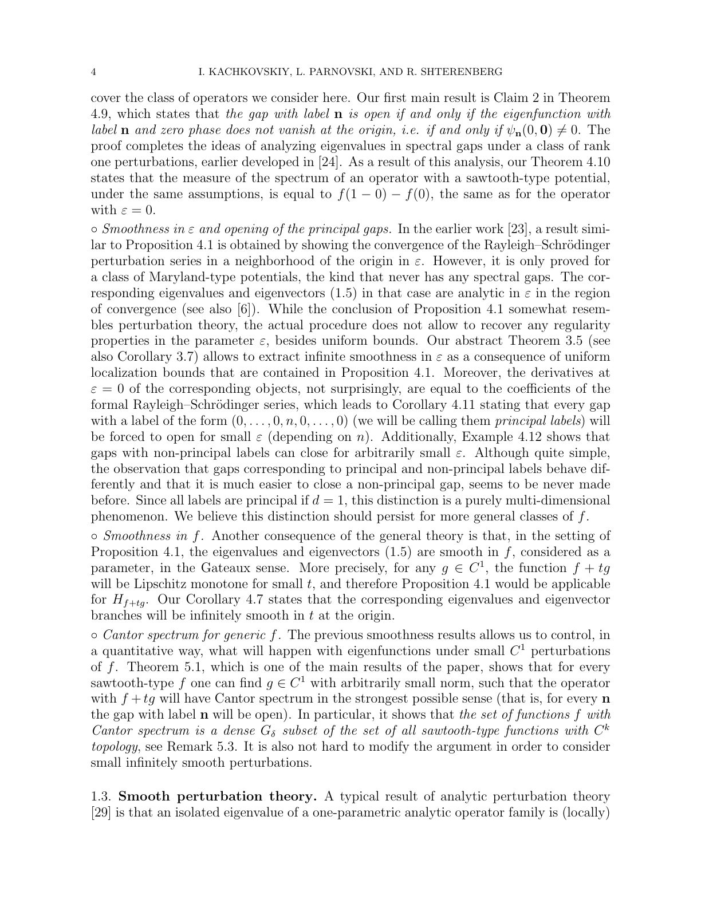
<figcaption class="paper-figure-caption"><b>Fig 3.</b> Low-resolution page preview, page 4</figcaption>
</figure>
<figure class="paper-figure-card">
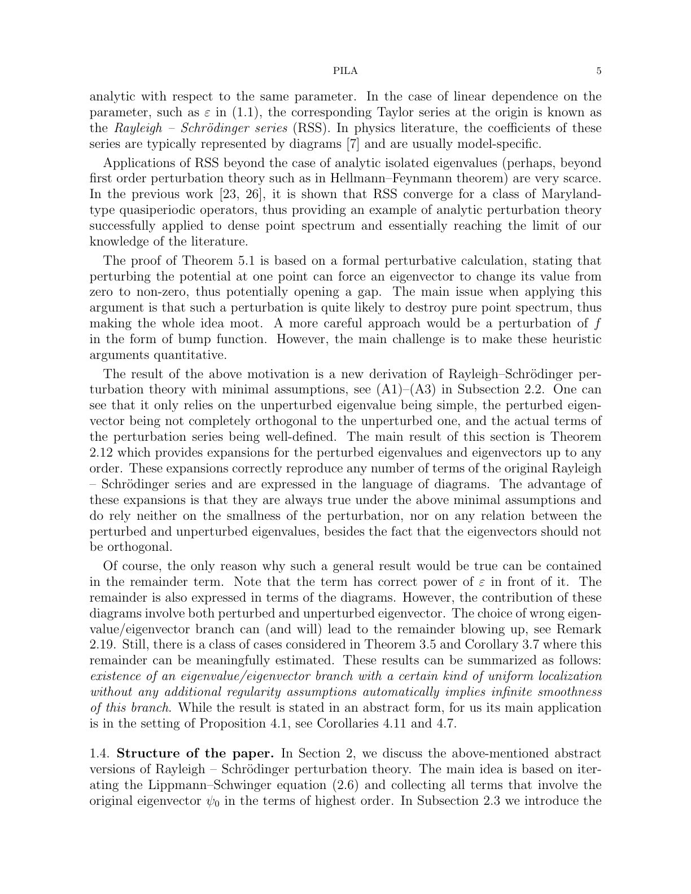
<figcaption class="paper-figure-caption"><b>Fig 4.</b> Low-resolution page preview, page 5</figcaption>
</figure>
<figure class="paper-figure-card">
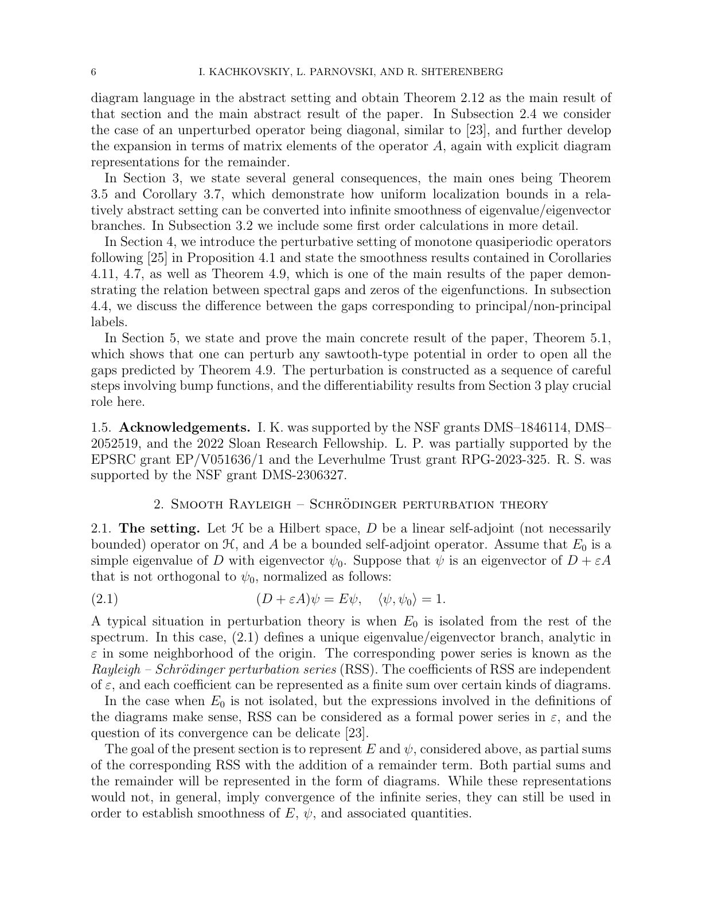
<figcaption class="paper-figure-caption"><b>Fig 5.</b> Low-resolution page preview, page 6</figcaption>
</figure>
</div>

<p><strong>Summary.</strong> This theoretical paper analyzes the spectrum of multi-dimensional quasiperiodic Schrödinger operators defined by sawtooth-type potentials. Using advanced perturbation theory, the authors prove that for generic potentials, the spectrum is a Cantor set with all gaps open. This work provides deep mathematical insight into spectral rigidity and localization in deterministic, quasiperiodic media.</p>
<p><strong>Why it may be interesting.</strong> The rigorous mathematical analysis of spectral gaps in quasiperiodic systems is central to understanding localization phenomena, which is a key topic in condensed matter physics, particularly concerning the transition between extended and localized states.</p>
<details>
<summary>Detailed structure</summary>
<p><strong>Main problem.</strong> The paper investigates the spectral structure of multi-dimensional quasiperiodic Schrödinger operators, specifically determining when their spectrum forms a Cantor set.</p>
<p><strong>Main result.</strong> For generic choices of the sampling function, the spectrum is proven to be a Cantor set with all gaps open, and this set of functions is a dense G_delta subset.</p>
<p><strong>Method.</strong> The authors employ smooth perturbation theory, utilizing Rayleigh-Schrödinger expansions and analyzing the vanishing of eigenfunctions at the origin to diagnose the opening or closing of spectral gaps.</p>
<p><strong>Model / system.</strong> The model is a quasiperiodic Schrödinger operator $H(x) = \varepsilon(\Delta + V(x))$ acting on $\ell^2(\mathbb{Z}^d)$, where the potential $V(n)$ is defined by a monotone sawtooth-type function $f$ sampled along a quasiperiodic lattice defined by $\omega$.</p>
<p><strong>Key observables.</strong> The spectrum $\sigma(H)$, the status of spectral gaps (open/closed), and the value of the eigenfunction at the origin, $\psi_n(0, 0)$.</p>
<p><strong>Important parameters / regimes.</strong> The small perturbation parameter $\varepsilon$ (or $\epsilon$), and the properties of the frequency vector $\omega$ (rationally independent).</p>
<p><strong>Assumptions / limitations.</strong> The analysis is primarily restricted to the perturbative localization regime ($0 < \varepsilon < \varepsilon_0$), and the results distinguish between principal and non-principal gap behaviors.</p>
<p><strong>Paper structure.</strong> The paper builds from establishing the basic model and perturbation framework (Chunk 1), develops the quantitative perturbation theory for gap analysis (Chunk 2), proves the density of functions yielding open gaps via constructive perturbations (Chunk 3), and concludes with convergence arguments for the limiting operators (Chunk 4).</p>
</details>
<details>
<summary>Abstract</summary>
<p>We consider multi-dimensional quasiperiodic Schrödinger operators with monotone sawtooth-type potentials in the perturbative localization regime. We prove that a given gap is closed iff a corresponding (via a natural gap labeling) eigenfunction vanishes at the origin. Using this, we show that for a generic choice of the sampling function $f$, the spectrum of such an operator is a Cantor set, with all possible gaps being open. We also provide a class of functions $f$ for which some gaps are closed. Finally, we observe that certain gaps are more difficult to close than the others.</p>
</details>
<p><sub><a href="#top">↑ back to top</a></sub></p>

<p><a id="paper-2610.02090"></a></p>
<h3 id="stationarity-as-a-one-mode-constraint-on-quantum-correlation"><a href="http://arxiv.org/abs/2610.02090v1">Stationarity as a One-Mode Constraint on Quantum Correlation</a></h3>
<p><strong>Authors:</strong> Itai Panas<br>
<strong>Type:</strong> theory · <strong>Category:</strong> strongly correlated electrons · <strong>PDF:</strong> <a href="https://arxiv.org/pdf/2610.02090v1">https://arxiv.org/pdf/2610.02090v1</a><br>
<strong>Analysis basis:</strong> full PDF text, analyzed in chunks
<strong>Topic relevance:</strong> <code>Keldysh / 2PI / non-Gaussian methods</code> <strong>1/5</strong></p>
<div class="figure-strip-hint">↔ Scroll figures horizontally</div>
<div class="paper-figures-scroll">
<figure class="paper-figure-card">
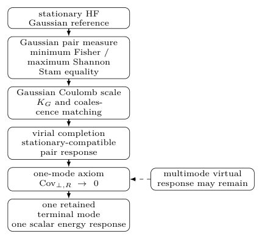
<figcaption class="paper-figure-caption"><b>Fig 1.</b> FIG. 1. Logical structure of the stationary one-mode construc- tion. The HF primitive-product Gaussian measure identifies a minimum-information relative-pair mode, the compatible Coulomb scale channel supplies the interaction response, and the virial supplies its stationary kinetic completion. Stationar- ity then motivates Eq. (11), which relinquishes response-space completeness for the terminal energy property. The dashed branch emphasizes that microscopic multimode structure is not claimed to disappear.</figcaption>
</figure>
<figure class="paper-figure-card">
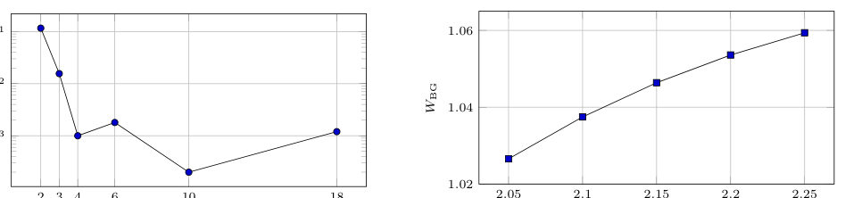
<figcaption class="paper-figure-caption"><b>Fig 2.</b> FIG. 2. Helium separates one-mode energetic sufficiency from microscopic spectral simplicity. Left: absolute error of the parameter-free one-mode He-like correlation energies over representative nuclear charges; the comparison uses high-accuracy numerical/Laguerre-based Hartree–Fock reference energies rather than a finite Gaussian orbital basis. Right: the BG spectral- width diagnostic WBG for an independent one-center spherical-Gaussian calculation (representative radial space 18s, 12p, 10d, 8f) remains near unity rather than zero, demonstrating a broad non-single-denominator return spectrum.</figcaption>
</figure>
</div>

<p><strong>Summary.</strong> This theoretical work argues that for quantum systems in stationary states, the terminal scalar correlation energy can be accurately described by a single, 'one-mode' constraint, even if the full microscopic excitation spectrum is complex. By testing this hypothesis on Helium using reg-HF methods against Bethe-Goldstone theory, the authors show that energetic sufficiency does not require spectral simplicity.</p>
<p><strong>Why it may be interesting.</strong> It provides a rigorous theoretical tool to decouple the dimensionality required for calculating a specific, observable energy (the terminal state) from the complexity of the underlying quantum correlation structure, which is highly relevant for understanding correlation in strongly interacting systems.</p>
<details>
<summary>Detailed structure</summary>
<p><strong>Main problem.</strong> The paper investigates whether the terminal scalar correlation-energy response of a quantum system, particularly in stationary states, must retain the full dimensionality of its microscopic response.</p>
<p><strong>Main result.</strong> Stationarity imposes a 'one-mode constraint' on the terminal scalar correlation response, which is shown to be highly accurate even when the full microscopic excitation spectrum (as seen in Bethe-Goldstone calculations) is complex and multi-dimensional.</p>
<p><strong>Method.</strong> The authors use a regularized Hartree-Fock (reg-HF) construction, employing Gaussian measures and virial completion, and contrast these results against exact calculations like Bethe-Goldstone (BG) theory.</p>
<p><strong>Model / system.</strong> The primary test case is the Helium atom/ion system. The theoretical framework involves analyzing the correlation energy derived from the Hamiltonian under the constraint of a stationary state.</p>
<p><strong>Key observables.</strong> Terminal scalar correlation response ($\Delta^{(1)}_0$), Bethe-Goldstone pair correlation energy ($E_{	ext{BG}}^c$), and the diagnostic quantity $W_{BG}$ which measures spectral complexity.</p>
<p><strong>Important parameters / regimes.</strong> The residual dimensionless parameter $\delta$, the retained Coulomb carrier $\delta/e$, and the finite-$Z$ insertion ratio $8\delta/9$.</p>
<p><strong>Assumptions / limitations.</strong> The core hypothesis is the 'one-mode exclusion axiom,' which assumes that covariance components orthogonal to the retained pair mode are excluded from the terminal energy property.</p>
<p><strong>Figures summary.</strong> Figure 2 compares the absolute error of the one-mode He-like correlation energies against the BG spectral-width diagnostic $W_{BG}$, demonstrating a clear separation between energetic sufficiency and spectral simplicity.</p>
<p><strong>Paper structure.</strong> The paper develops the argument by first establishing the reg-HF framework and the one-mode constraint imposed by stationarity. It then tests this constraint using Helium, comparing the resulting single-mode energy calculation against the full, complex spectrum derived from Bethe-Goldstone theory.</p>
</details>
<details>
<summary>Abstract</summary>
<p>A stationary quantum state has one dynamical phase factor and one scalar energy even when its internal response spans a large Hilbert space. Our argument concerns not the value or observability of an absolute phase, but the one-ness of stationary time evolution. In regularized Hartree--Fock (reg-HF), the connection to the stationary mean field is established before any one-mode reduction: the primitive-product relative-coordinate Gaussian measure induced by the Gaussian HF representation fixes a covariance and, at that covariance, is simultaneously the minimum-Fisher-information and maximum-Shannon-differential-entropy distribution and the equality case of the Stam bound. The Coulomb operator admits a compatible Gaussian scale resolution, and virial completion converts the resulting regularized pair displacement into a stationary-compatible response. Stationarity motivates a one-mode constraint on the terminal scalar correlation response. The decisive reg-HF hypothesis is a one-mode exclusion axiom: covariance carried by response components orthogonal to the retained pair mode is excluded from the terminal scalar energy property, without asserting that the unrestricted response is one dimensional. Helium provides the minimal nontrivial test. The parameter-free retained Coulomb carrier $-δ/e$ and finite-$Z$ insertion $8δ/9$ closely reproduce independent He-like coefficients and energies, while an explicit Bethe--Goldstone calculation displays a broad non-single-denominator return spectrum even though its scalar energy is exactly moment-compressible. The result separates microscopic spectral complexity from one-mode energetic sufficiency.</p>
</details>
<p><sub><a href="#top">↑ back to top</a></sub></p>

<p><a id="paper-2610.01466"></a></p>
<h3 id="zero-versus-infinite-temperature-damping-in-variational-quantum-circuits-feature-scale-sampling-cost-and-frame-gauge"><a href="http://arxiv.org/abs/2610.01466v1">Zero- Versus Infinite-Temperature Damping in Variational Quantum Circuits: Feature Scale, Sampling Cost, and Frame Gauge</a></h3>
<p><strong>Authors:</strong> Vu-Quoc-Minh Nguyen, Tuan-Vu Truong, Hoang-Long Nguyen, Trung-Khanh Le<br>
<strong>Type:</strong> theory · <strong>Category:</strong> quantum information and computing · <strong>PDF:</strong> <a href="https://arxiv.org/pdf/2610.01466v1">https://arxiv.org/pdf/2610.01466v1</a><br>
<strong>Analysis basis:</strong> full PDF text, analyzed in chunks
<strong>Topic relevance:</strong> <code>correlated / nonlocal dissipation</code> <strong>1/5</strong></p>
<div class="figure-strip-hint">↔ Scroll figures horizontally</div>
<div class="paper-figures-scroll">
<figure class="paper-figure-card">
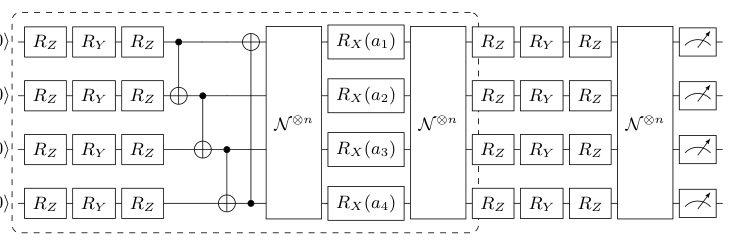
<figcaption class="paper-figure-caption"><b>Fig 1.</b> FIG. 1. The classifier at n = 4, drawn for one layer and the final block. Each RZRY RZ triple carries three trainable angles; the encoding column re-uploads the angle vector a in each of the L layers. The channel acts on every qubit after the entangler, after the encoding, and after the final block, giving 2L + 1 insertions per qubit. The features zj = ⟨Zj⟩enter a trainable linear readout.</figcaption>
</figure>
<figure class="paper-figure-card">
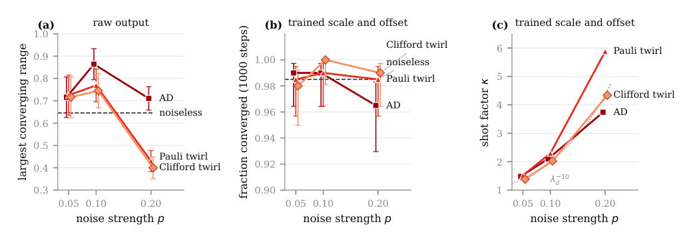
<figcaption class="paper-figure-caption"><b>Fig 2.</b> FIG. 2. Single-qubit re-uploading fits of Ref. [22] (200 targets). (a) Largest converging output range of the raw model f = ⟨Z⟩, with a free target offset as in Ref. [22]. (b) Fraction of targets of range R = 1 that converge within 1000 steps when an output scale s and offset b are trained. (c) Shot factor κ = (s/sNone)2 from the median fitted scale; the dotted line is the exact depolarizing value λ−10 d . Bars are 95% confidence intervals of the mean over targets in (a) and Wilson 95% intervals in (b).</figcaption>
</figure>
<figure class="paper-figure-card">
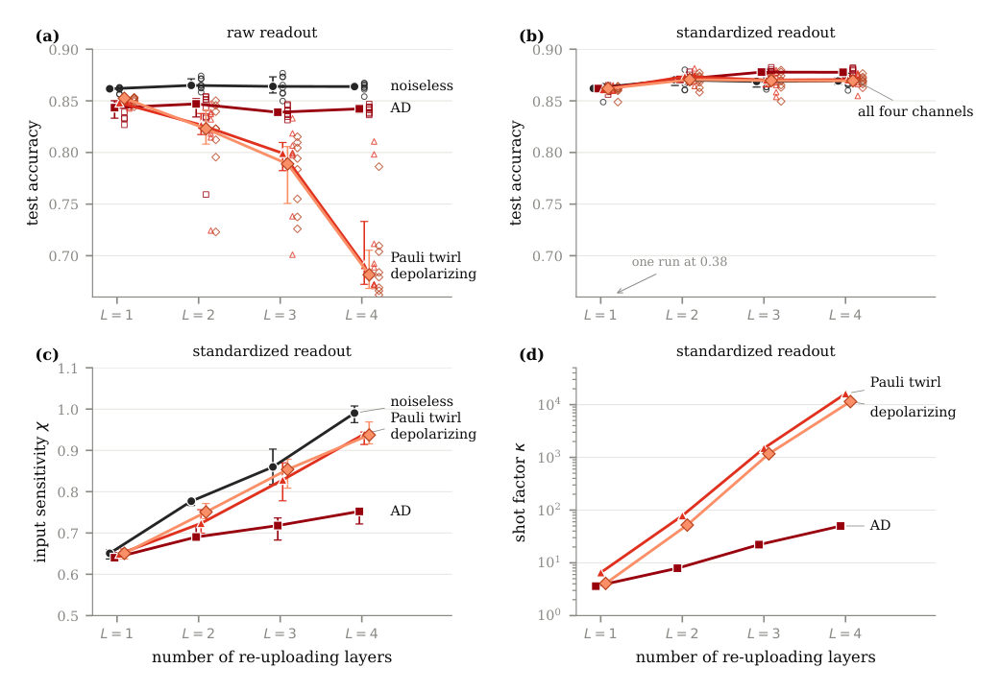
<figcaption class="paper-figure-caption"><b>Fig 3.</b> FIG. 3. Four-qubit classifier on MNIST against the number of re-uploading layers. (a) Test accuracy with the raw readout and (b) with the standardized readout, both after 100 steps. (c) Input sensitivity and (d) shot factor κ of Eq. (30) with the standardized readout. Panels (a)–(c) show the median and interquartile range over eight initializations, with each run as a hollow marker; one Pauli run at L = 1 in (b) diverged and lies below the axis.</figcaption>
</figure>
<figure class="paper-figure-card">
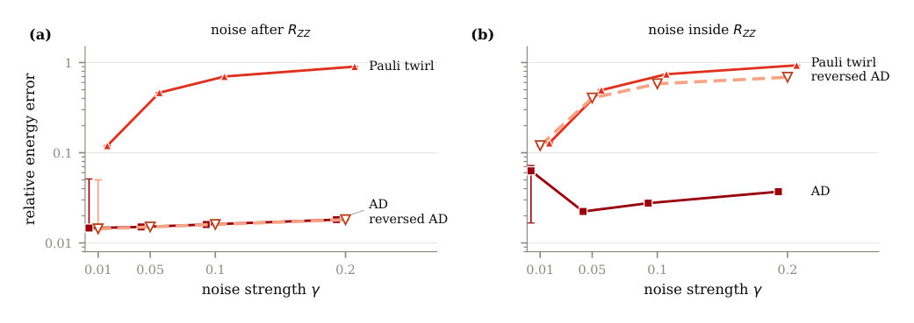
<figcaption class="paper-figure-caption"><b>Fig 4.</b> FIG. 4. Relative energy error of the three-qubit eigensolver against the noise strength, for AD, reversed AD (hollow markers), and the Pauli twirl (logarithmic vertical axis). Points are the median of 50 initializations and bars the interquartile range. (a) The channel acts after the complete RZZ; AD and reversed AD coincide. (b) The channel acts after each CNOT inside RZZ, as in Ref. [22].</figcaption>
</figure>
<figure class="paper-figure-card">
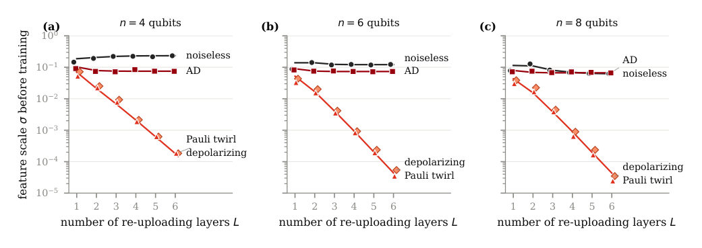
<figcaption class="paper-figure-caption"><b>Fig 5.</b> FIG. 5. Feature scale σ before training against the number of re-uploading layers for (a) four, (b) six, and (c) eight qubits, with n principal components as inputs. Markers are the root-mean-square scale over five parameter draws, the same at every depth, and 300 training images; lines are the exact average over parameters for the noiseless circuit, AD, and the Pauli twirl (Appendix D).</figcaption>
</figure>
</div>

<p><strong>Summary.</strong> This work rigorously compares amplitude damping (zero-temperature noise) against its Pauli twirl counterpart (infinite-temperature noise) in Variational Quantum Circuits. The study finds that while the noise models look similar in theory, the practical impact on measurement fidelity is vastly different, with AD maintaining significantly better performance in finite-shot simulations. This highlights the critical importance of understanding the precise thermal nature of noise in quantum computation.</p>
<p><strong>Why it may be interesting.</strong> The explicit comparison between zero-temperature (AD) and infinite-temperature (Pauli twirl) noise provides deep insight into the physical origin of noise biases in quantum machine learning algorithms, which is crucial for designing robust quantum hardware.</p>
<details>
<summary>Detailed structure</summary>
<p><strong>Main problem.</strong> The paper compares the effects of zero-temperature amplitude damping (AD) versus infinite-temperature Pauli twirl noise on the performance of Variational Quantum Circuits (VQC). It investigates how this noise affects feature scale, sampling cost, and the underlying gauge structure.</p>
<p><strong>Main result.</strong> While a trainable output scale can mitigate accuracy differences in ideal simulations, the noise difference reappears as a significant cost in finite-shot measurements, with AD performing substantially better than its twirled counterpart. The damping direction is shown to be a gauge under specific circuit conditions.</p>
<p><strong>Method.</strong> The authors use theoretical analysis and numerical simulations to compare noise channels (AD vs. Pauli twirl) applied to VQCs used for tasks like classification and eigensolving.</p>
<p><strong>Model / system.</strong> The core model is the Variational Quantum Circuit (VQC), applied to tasks such as 4-qubit classification (on MNIST data) and quantum eigensolvers. Noise is modeled using Amplitude Damping (AD) and its infinite-temperature counterpart, the Pauli twirl.</p>
<p><strong>Key observables.</strong> Test accuracy retention, operational shot cost ($\kappa(N)$), feature scale, and the relative error in eigensolver calculations.</p>
<p><strong>Important parameters / regimes.</strong> Damping parameter ($p$), circuit depth ($L$), number of qubits ($n$), and the number of measurement shots ($N_s$).</p>
<p><strong>Assumptions / limitations.</strong> The analysis compares AD to the Pauli twirl approximation, and some results rely on specific averaging assumptions for the final circuit block.</p>
<p><strong>Figures summary.</strong> Figures compare performance metrics (like accuracy vs. depth) under different noise channels, demonstrating the quantitative difference in performance between AD and Pauli twirls, especially when considering measurement shot costs.</p>
<p><strong>Paper structure.</strong> The paper systematically compares AD and Pauli twirl noise, first analyzing feature scale differences, then quantifying the performance gap in finite-shot simulations, and finally discussing the gauge nature of the damping direction in different circuit contexts.</p>
</details>
<details>
<summary>Abstract</summary>
<p>The Pauli twirl of amplitude damping (AD) is generalized amplitude damping at infinite temperature: it keeps the contraction of AD and removes its non-unital term, so comparing the two in variational circuits isolates the zero-temperature bias, which acts mainly through the scale of the features. For random parameters, features under AD settle on a floor, which at strong damping is set by the last layer, has a closed form, and at fixed $T_1$ falls with temperature as $\tanh(\hbarω/2k_BT)$; under the twirls they shrink by a constant factor per layer, up to eight qubits. A trainable output scale removes most of the resulting accuracy differences, leaving AD ahead of its twirls by at most about three percentage points in our simulations; what it removes reappears as a cost in measurement shots: trained and tested with $10^3$ shots per image, a four-qubit classifier under AD at $p=0.3$ stays within 1.5 points of noiseless accuracy, while the twirled classifiers lose up to 33. At weaker damping the separation depth grows roughly as $(np)^{-1}\ln(1/p)$. The damping direction is a gauge when the damping follows complete entangling layers and the circuit boundaries are trainable; in an eigensolver it becomes physical inside a decomposed two-qubit gate.</p>
</details>
<p><sub><a href="#top">↑ back to top</a></sub></p>
<h2 id="other-papers-57">Other papers (57)</h2>
<p><em>Papers from primary archives without highlighted authors or any topic match. Click to expand.</em></p>
<details>
<summary>Show other papers</summary>

<p><a id="paper-2610.02029"></a></p>
<h3 id="a-variant-of-clifford-circuit-synthesis-is-np-complete"><a href="http://arxiv.org/abs/2610.02029v1">(A Variant of) Clifford Circuit Synthesis is NP-Complete</a></h3>
<p><strong>Authors:</strong> Luna Lima Keller, Richard Kueng<br>
<strong>Type:</strong> theory · <strong>Category:</strong> quantum information and computing · <strong>PDF:</strong> <a href="https://arxiv.org/pdf/2610.02029v1">https://arxiv.org/pdf/2610.02029v1</a><br>
<strong>Analysis basis:</strong> full PDF text, analyzed in chunks</p>
<div class="figure-strip-hint">↔ Scroll figures horizontally</div>
<div class="paper-figures-scroll">
<figure class="paper-figure-card">
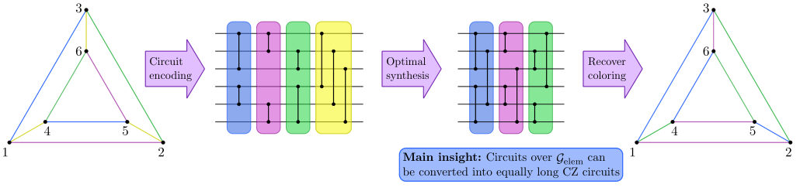
<figcaption class="paper-figure-caption"><b>Fig 1.</b> FIG. 1: Caricature of the Karp reduction from 3-regular graph edge coloring to depth-optimal Clifford circuit synthesis. A 4-coloring of the initial graph with n = 6 vertices is included for illustration.</figcaption>
</figure>
</div>
<p><strong>Summary.</strong> This paper establishes that finding the shortest quantum circuit representation for a given Clifford unitary is NP-hard. It achieves this by reducing the problem to graph edge coloring. Furthermore, it proves that for 3-regular graphs, the optimal circuit depth is determined solely by the number of CZ gates required, regardless of the inclusion of other Clifford gates like Hadamard or CNOT.</p>
<p><strong>Why it may be interesting.</strong> This work provides deep complexity-theoretic bounds on quantum hardware design, showing that even for the relatively simple Clifford group, finding the shortest circuit is computationally hard.</p>
<details>
<summary>Detailed structure</summary>
<p><strong>Main problem.</strong> The paper investigates the computational complexity of optimal quantum circuit synthesis, specifically for Clifford circuits.</p>
<p><strong>Main result.</strong> It proves that optimal Clifford circuit synthesis is NP-hard, and furthermore, for 3-regular graphs, the optimal depth using general Clifford gates equals the depth achievable using only CZ gates.</p>
<p><strong>Method.</strong> The hardness proof uses a reduction from 3-edge colorability on 3-regular graphs to the circuit synthesis problem. The equivalence proof relies on systematically eliminating Hadamard and CNOT gates from the optimal circuit structure.</p>
<p><strong>Model / system.</strong> The model is the quantum circuit implementing a unitary $U_G$ derived from a graph $G$. The analysis focuses on the Clifford group operations using elementary gates like H, CNOT, and CZ.</p>
<p><strong>Key observables.</strong> Optimal circuit depth ($   ext{Delem}(U_G)$), edge chromatic number ($\chi'(G)$), and the number of CZ gates ($NCZ$).</p>
<p><strong>Important parameters / regimes.</strong> The graph $G$ is assumed to be 3-regular, constraining $\chi'(G)$ to $\{3, 4\}$. The analysis often considers circuits of depth $\le 3$.</p>
<p><strong>Assumptions / limitations.</strong> The analysis assumes that gates on disjoint qubits can be executed in parallel in a single layer, and the final structural proofs are restricted to 3-regular graphs.</p>
<p><strong>Figures summary.</strong> Figure 1 illustrates the reduction from 3-regular graph edge coloring to depth-optimal Clifford circuit synthesis, akin to a Karp reduction.</p>
<p><strong>Paper structure.</strong> The paper first establishes the NP-hardness via reduction from graph coloring. It then proceeds to prove the structural equivalence ($ ext{Delem} =    ext{DCZ}$) by sequentially simplifying the circuit structure, first eliminating Hadamard gates, then CNOT gates, leaving only CZ gates for 3-regular graphs.</p>
</details>
<details>
<summary>Abstract</summary>
<p>Optimal circuit synthesis is the problem of finding the shortest-depth circuit representation of a given functionality with respect to a pre-specified elementary gate set. This is a central problem in both quantum and classical hardware design. While the classical version is very well understood -- both in terms of heuristics and rigorous hardness assertions -- much less is known about optimal quantum circuit synthesis.   We focus on optimal Clifford circuit synthesis, for which various heuristics are known, e.g. via reduction to 3-SAT. Our main result supplies a matching hardness result: a variant of optimal Clifford synthesis is NP-hard. The proof proceeds in two parts: (i) reduce 3-edge colorability on 3-regular graphs to a circuit synthesis problem that only involves CZ gates, (ii) prove that the availability of additional elementary Clifford gates -- most notably: Hadamard, phase and CNOT -- cannot lead to further improvements of the optimal circuit depth. Our work sharpens the complexity-theoretic understanding of Clifford circuits: simulation and equivalence checking are in P, whereas deciding whether a Clifford unitary admits an implementation within a prescribed depth is NP-complete.</p>
</details>
<p><sub><a href="#top">↑ back to top</a></sub></p>

<p><a id="paper-2610.02134"></a></p>
<h3 id="a-generalized-quantum-stein-lemma-on-von-neumann-algebras"><a href="http://arxiv.org/abs/2610.02134v1">A Generalized quantum Stein lemma on von Neumann algebras</a></h3>
<p><strong>Authors:</strong> Li Gao<br>
<strong>Type:</strong> theory · <strong>Category:</strong> quantum information and computing · <strong>PDF:</strong> <a href="https://arxiv.org/pdf/2610.02134v1">https://arxiv.org/pdf/2610.02134v1</a><br>
<strong>Analysis basis:</strong> full PDF text, analyzed in chunks</p>
<div class="figure-strip-hint">↔ Scroll figures horizontally</div>
<div class="paper-figures-scroll">
<figure class="paper-figure-card">
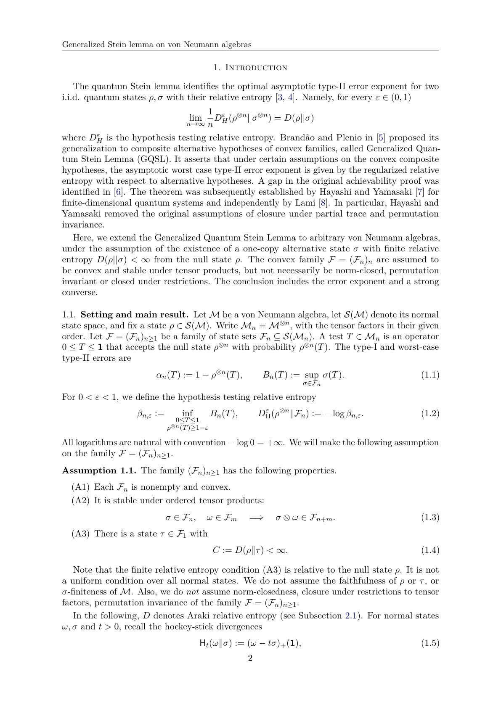
<figcaption class="paper-figure-caption"><b>Fig 1.</b> Low-resolution page preview, page 2</figcaption>
</figure>
<figure class="paper-figure-card">
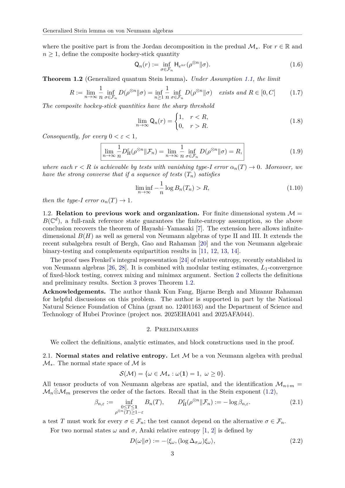
<figcaption class="paper-figure-caption"><b>Fig 2.</b> Low-resolution page preview, page 3</figcaption>
</figure>
<figure class="paper-figure-card">
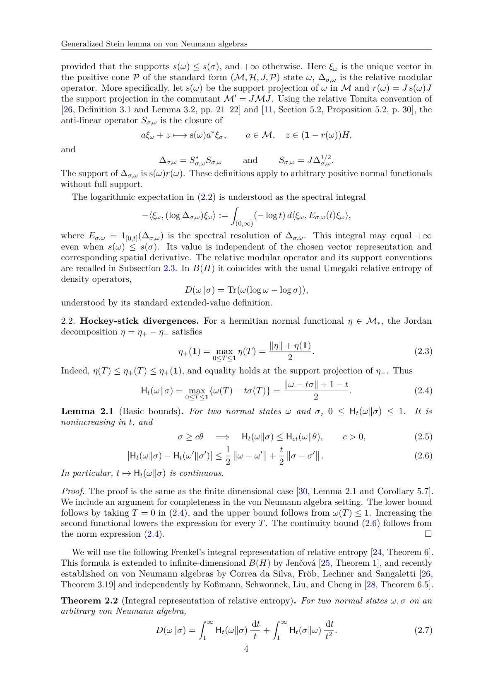
<figcaption class="paper-figure-caption"><b>Fig 3.</b> Low-resolution page preview, page 4</figcaption>
</figure>
<figure class="paper-figure-card">
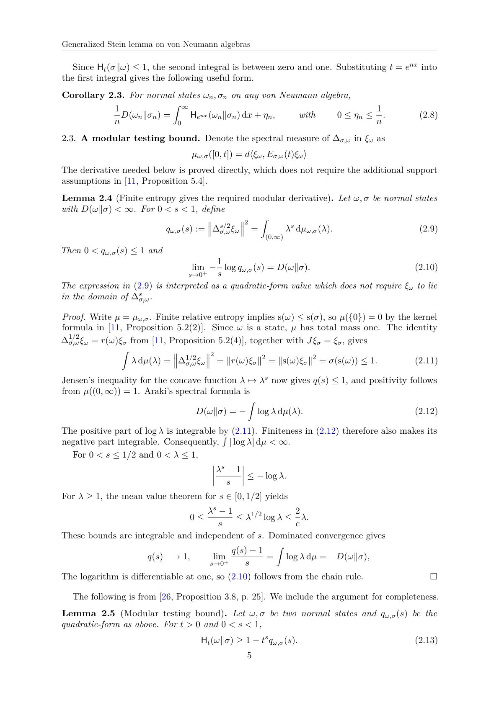
<figcaption class="paper-figure-caption"><b>Fig 4.</b> Low-resolution page preview, page 5</figcaption>
</figure>
<figure class="paper-figure-card">
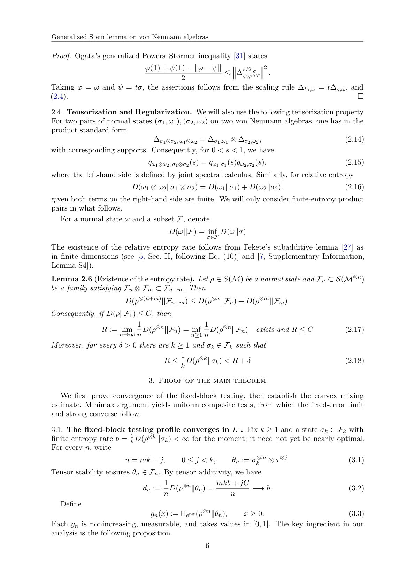
<figcaption class="paper-figure-caption"><b>Fig 5.</b> Low-resolution page preview, page 6</figcaption>
</figure>
</div>
<p><strong>Summary.</strong> This theoretical paper generalizes the quantum Stein lemma to arbitrary von Neumann algebras, providing rigorous bounds for distinguishing between quantum states. It proves that the rate of distinguishability is governed by the regularized relative entropy, establishing a sharp threshold for testing quantities. This extends fundamental results from finite quantum systems to the most general setting of operator algebras.</p>
<p><strong>Why it may be interesting.</strong> While highly abstract, the techniques involving relative entropy rates and strong converse theorems are foundational to understanding the limits of quantum channel capacity and distinguishability, which are core concepts in quantum information theory.</p>
<details>
<summary>Detailed structure</summary>
<p><strong>Main problem.</strong> The paper aims to prove a generalized quantum Stein lemma for hypothesis testing involving i.i.d. normal states against convex, tensor-stable families on arbitrary von Neumann algebras.</p>
<p><strong>Main result.</strong> It establishes that the asymptotic worst-case type-II error exponent is achieved by the regularized relative entropy, providing a strong converse for the distinguishability rate.</p>
<p><strong>Method.</strong> The proof combines integral representations of relative entropy (via hockey-stick divergences), a modular testing bound, and convex minimax arguments.</p>
<p><strong>Model / system.</strong> The theory is developed for quantum states ($
ho, \sigma$) defined on arbitrary von Neumann algebras ($M$), generalizing results from finite-dimensional systems.</p>
<p><strong>Key observables.</strong> The worst-case type-II error exponent, the regularized relative entropy ($R$), and the composite hockey-stick quantities ($Q_n(r)$).</p>
<p><strong>Important parameters / regimes.</strong> The error tolerance $\epsilon \in (0, 1)$ and the number of tensor factors $n 	o \infty$.</p>
<p><strong>Assumptions / limitations.</strong> The family of states $F$ must be convex and tensor-stable, and the existence of an alternative state with finite relative entropy from the null state is assumed.</p>
<p><strong>Figures summary.</strong> Not specified.</p>
<p><strong>Paper structure.</strong> The paper builds by defining key divergences and bounds (relative entropy, modular testing bound), proving convergence results for testing profiles (Proposition 3.1), establishing the sharp threshold for $Q_n(r)$, and finally deriving the strong converse and fixed-error rate upper bound (Theorem 1.2).</p>
</details>
<details>
<summary>Abstract</summary>
<p>We prove a generalized quantum Stein lemma for i.i.d. normal states against convex, tensor-stable families on arbitrary von Neumann algebras. Assuming the existence of an alternative state with finite relative entropy from the null state, we show that, at every type-I error tolerance $\varepsilon\in (0,1)$, the worst case type-II error exponent is achieved with the regularized relative entropy with a strong converse. The proof combines the integral representation of relative entropy by hockey-stick divergences, a modular testing bound, and convex minimax argument.</p>
</details>
<p><sub><a href="#top">↑ back to top</a></sub></p>

<p><a id="paper-2610.01574"></a></p>
<h3 id="adversarial-robustness-in-fake-quantum-simulators"><a href="http://arxiv.org/abs/2610.01574v1">Adversarial Robustness in Fake Quantum Simulators</a></h3>
<p><strong>Authors:</strong> Marc Maußner, Volker Reers<br>
<strong>Type:</strong> both · <strong>Category:</strong> quantum information and computing · <strong>PDF:</strong> <a href="https://arxiv.org/pdf/2610.01574v1">https://arxiv.org/pdf/2610.01574v1</a><br>
<strong>Analysis basis:</strong> full PDF text, analyzed in chunks</p>
<div class="figure-strip-hint">↔ Scroll figures horizontally</div>
<div class="paper-figures-scroll">
<figure class="paper-figure-card">
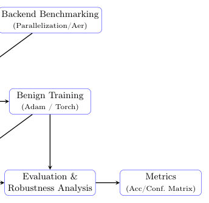
<figcaption class="paper-figure-caption"><b>Fig 1.</b> Fig. 1. Experimental workflow for noise-aware adversarial evaluation. The pipeline consists of: (1) Acquisition and reduction of the plus-minus dataset, (2) Backend benchmarking to optimize simulation threads and methods, (3) QNN construction using Strongly Entangling Layers, (4) Model training on benign data, (5) Adversarial example generation via Projected Gradient Descent (PGD), and (6) Robustness analysis using accuracy and confusion matrices.</figcaption>
</figure>
<figure class="paper-figure-card">
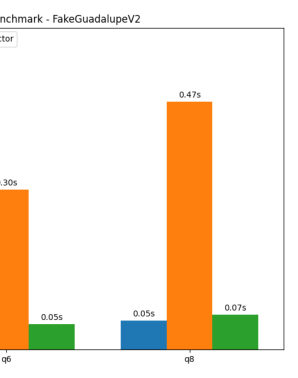
<figcaption class="paper-figure-caption"><b>Fig 2.</b> Fig. 2. Benchmarking of simulation methods in Qiskit Aer on the FakeGuadalupeV2 backend. The automatic method (blue) identifies the optimal solver for specific circuit configurations, significantly outperforming the matrix_product_state (MPS) approach as the qubit count scales from 4 to 8 qubits.</figcaption>
</figure>
<figure class="paper-figure-card">
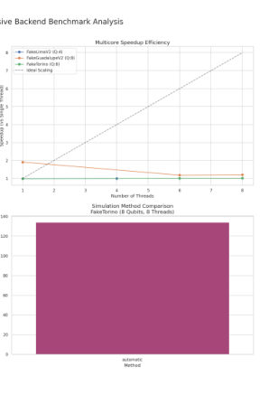
<figcaption class="paper-figure-caption"><b>Fig 3.</b> Fig. 3. Comprehensive comparison of simulation runtimes via the PennyLane interface across multiple noisy backends (FakeGuadalupeV2, FakeLimaV2, FakeJakartaV2). The plots illustrate the impact of parallelization configurations (max_parallel_threads) and highlight the communication overhead introduced by the PennyLane-Qiskit bridge.</figcaption>
</figure>
<figure class="paper-figure-card">
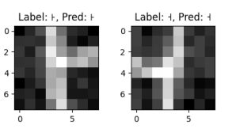
<figcaption class="paper-figure-caption"><b>Fig 4.</b> Fig. 4. Comparison of model performance on FakeGuadalupeV2 after balanced (50/50) adversarial retraining. This strategy results in a substantial recovery of robustness, increasing robust accuracy from 44% (sparse 10% ratio) to 84%, demonstrating that dataset balance is critical for security in hardware-mimicking environments.</figcaption>
</figure>
</div>
<p><strong>Summary.</strong> This work assesses the reliability of QML models running on noisy quantum simulators by testing their performance under adversarial attacks. The authors benchmark simulation efficiency and demonstrate that robust defense requires balancing adversarial training data with clean data (50/50 ratio). This highlights critical engineering requirements for deploying quantum machine learning in the NISQ era.</p>
<p><strong>Why it may be interesting.</strong> It provides concrete, quantitative results on the practical limitations of current QML models when exposed to realistic noise and targeted attacks, which is crucial for designing fault-tolerant quantum algorithms.</p>
<details>
<summary>Detailed structure</summary>
<p><strong>Main problem.</strong> The paper investigates how Quantum Machine Learning (QML) models perform in terms of scalability and robustness when run on simulated noisy quantum hardware.</p>
<p><strong>Main result.</strong> Achieving practical robustness for 4-qubit classifiers requires a balanced adversarial-to-benign retraining ratio (50/50), significantly improving accuracy over sparse retraining.</p>
<p><strong>Method.</strong> The study combines performance benchmarking of quantum simulators with adversarial attack simulations using Projected Gradient Descent (PGD) and subsequent adversarial retraining.</p>
<p><strong>Model / system.</strong> The system uses a hybrid classical-quantum neural network (QNN) classifier trained on a 4-qubit circuit ansatz, simulated using Qiskit's fake backends mimicking NISQ devices.</p>
<p><strong>Key observables.</strong> Benign Accuracy, Adversarial Accuracy, Robust Accuracy, and simulation runtime scaling factors.</p>
<p><strong>Important parameters / regimes.</strong> The adversarial constraint is set by the $\ell_\infty$-norm ($\epsilon=0.1$), and the study scales up to 8 qubits.</p>
<p><strong>Assumptions / limitations.</strong> The fidelity of the noise models is assumed to be accurate based on real system snapshots, and the threat model assumes white-box access for the adversary.</p>
<p><strong>Figures summary.</strong> Figures illustrate the full workflow, performance benchmarking comparing automatic vs. MPS simulation methods, and the quantitative recovery of robust accuracy when using 50/50 adversarial retraining.</p>
<p><strong>Paper structure.</strong> The paper follows a structure of benchmarking simulation performance (throughput/scaling) first, followed by a detailed adversarial robustness evaluation comparing various defense strategies (retraining ratios, regularization) against PGD attacks.</p>
</details>
<details>
<summary>Abstract</summary>
<p>This paper investigates the performance scalability and adversarial robustness of Quantum Machine Learning (QML) models deployed on noise-model-based fake simulators. We conduct a dual-phased study, first benchmarking the computational throughput of Qiskit's Aer simulation engine across varying hardware architectures, and second, evaluating the effectiveness of Projected Gradient Descent (PGD) attacks and adversarial retraining strategies under realistic noise conditions. Our results quantify the runtime tradeoffs and scaling behavior for medium-scale simulations (projected up to 8 qubits) and demonstrate that high adversarial-to-benign retraining ratios (50/50) are essential for achieving practical model robustness for 4-qubit classifiers under realistic noise conditions.</p>
</details>
<p><sub><a href="#top">↑ back to top</a></sub></p>

<p><a id="paper-2610.02099"></a></p>
<h3 id="an-exponential-separation-between-entanglement-assisted-and-unassisted-one-way-quantum-communication"><a href="http://arxiv.org/abs/2610.02099v1">An exponential separation between entanglement-assisted and unassisted one-way quantum communication</a></h3>
<p><strong>Authors:</strong> Ryan Anselm, Srijita Kundu, Olivier Lalonde, Ashwin Nayak<br>
<strong>Type:</strong> theory · <strong>Category:</strong> quantum information and computing · <strong>PDF:</strong> <a href="https://arxiv.org/pdf/2610.02099v1">https://arxiv.org/pdf/2610.02099v1</a><br>
<strong>Analysis basis:</strong> full PDF text, analyzed in chunks</p>
<div class="figure-strip-hint">↔ Scroll figures horizontally</div>
<div class="paper-figures-scroll">
<figure class="paper-figure-card">
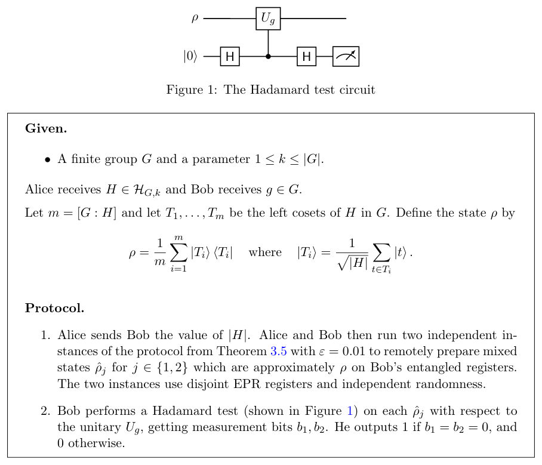
<figcaption class="paper-figure-caption"><b>Fig 1.</b> Figure 2: An efficient entanglement-assisted protocol for MembG,k using 2⌈log2 |G|⌉EPR pairs and O(log k) bits of communication.</figcaption>
</figure>
<figure class="paper-figure-card">
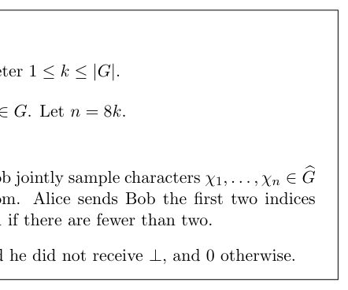
<figcaption class="paper-figure-caption"><b>Fig 2.</b> Figure 3: An efficient classical one-way protocol for MembG,k when G is abelian.</figcaption>
</figure>
</div>
<p><strong>Summary.</strong> This paper resolves a long-standing open problem by proving an exponential separation in the one-way quantum communication setting. They demonstrate that certain total Boolean functions can be computed using very few classical bits if entanglement is shared, but require significantly more quantum qubits if entanglement is unavailable. This result highlights the computational advantage of entanglement for total functions.</p>
<p><strong>Why it may be interesting.</strong> It provides a concrete, quantifiable separation in quantum communication complexity, which is a fundamental theoretical tool used to understand the power of entanglement in computation, relevant to quantum networking and information theory.</p>
<details>
<summary>Detailed structure</summary>
<p><strong>Main problem.</strong> The paper addresses the open question of whether an exponential separation exists between the communication complexity required for a total Boolean function when entanglement is available versus when it is not, specifically in the one-way communication setting.</p>
<p><strong>Main result.</strong> The authors establish an exponential separation by constructing a family of total Boolean functions $f_n$ that require only $O(\log n)$ bits of one-way classical communication with prior entanglement, but $\Omega(n^{1/3})$ qubits without entanglement.</p>
<p><strong>Method.</strong> The proof involves establishing upper and lower bounds on the communication complexity for the function, utilizing techniques from quantum communication complexity theory and relating the problem to the subgroup membership problem.</p>
<p><strong>Model / system.</strong> The model is the one-way quantum communication setting for computing a total Boolean function $f_n: \{0, 1\}^n 	imes \{0, 1\}^n 	o \{0, 1\}$, comparing protocols that use shared entanglement versus those that do not.</p>
<p><strong>Key observables.</strong> Communication cost (bits vs. qubits), success probability, and the separation gap (exponential vs. polynomial).</p>
<p><strong>Important parameters / regimes.</strong> The function size $n$, the communication complexity bounds ($O(\log n)$ vs. $\Omega(n^{1/3})$), and the error tolerance ($\le 1/3$).</p>
<p><strong>Assumptions / limitations.</strong> The result holds for a family of total Boolean functions, and the lower bound techniques rely on specific mathematical principles like Yao's min-max principle.</p>
<p><strong>Paper structure.</strong> The paper first frames the open question regarding total Boolean functions. It then establishes the upper bound using entanglement-assisted protocols (related to subgroup membership) and derives the lower bound for the unassisted quantum setting, culminating in the proof of the exponential separation.</p>
</details>
<details>
<summary>Abstract</summary>
<p>A longstanding question in quantum communication complexity is whether some task can be accomplished with a small amount of communication in the presence of entanglement, yet require much more quantum communication in the absence of entanglement. Separations of this nature were previously known for relational problems and, in the simultaneous message passing model, for partial functions. But it has remained unresolved whether any such separation exists for a total Boolean function. We resolve this question with an exponential separation in the one-way setting: we exhibit a family of total Boolean functions $f_n\colon \{0,1\}^n \times \{0,1\}^n \to \{0,1\}$ that can be computed with $O(\log n)$ bits of one-way classical communication given prior entanglement, but that require $Ω(n^{1/3})$ qubits of one-way quantum communication without entanglement. Our function is a special case of the subgroup membership problem, first studied in the communication setting by Aaronson, Le Gall, Russell, and Tani.</p>
</details>
<p><sub><a href="#top">↑ back to top</a></sub></p>

<p><a id="paper-2610.00736"></a></p>
<h3 id="beyond-feasibility-finite-depth-accessibility-in-constrained-qaoa"><a href="http://arxiv.org/abs/2610.00736v1">Beyond Feasibility: Finite-Depth Accessibility in Constrained QAOA</a></h3>
<p><strong>Authors:</strong> Rushikesh Ubale, Gregory T. Byrd, Yasar Mulani, Sangram Deshpande<br>
<strong>Type:</strong> theory · <strong>Category:</strong> quantum information and computing · <strong>PDF:</strong> <a href="https://arxiv.org/pdf/2610.00736v1">https://arxiv.org/pdf/2610.00736v1</a><br>
<strong>Analysis basis:</strong> full PDF text, analyzed in chunks</p>
<div class="figure-strip-hint">↔ Scroll figures horizontally</div>
<div class="paper-figures-scroll">
<figure class="paper-figure-card">
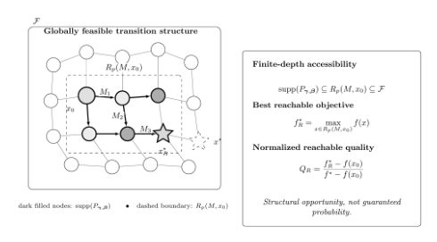
<figcaption class="paper-figure-caption"><b>Fig 1.</b> FIG. 1. Conceptual distinction between global feasible con- nectivity and finite-depth accessibility. Although the full constraint-preserving mixer structure may connect the feasi- ble manifold F, a circuit initialized at x0 and executing only a finite mixer schedule can structurally access only Rp(M, x0) ⊆ F. The accessible set contains the computational-basis sup- port of the ideal circuit and defines the best reachable objec- tive f ⋆ R and normalized reachable quality QR.</figcaption>
</figure>
<figure class="paper-figure-card">
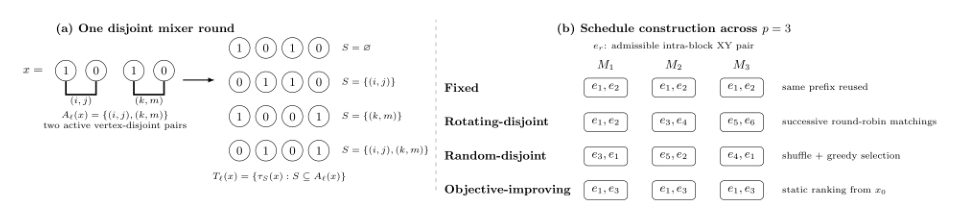
<figcaption class="paper-figure-caption"><b>Fig 2.</b> FIG. 2. Disjoint-round semantics and mixer-schedule construction. (a) A single round can contain several vertex-disjoint XY exchanges, so all compatible subsets of the active exchanges contribute to the structural accessible set. (b) The fixed, rotating- disjoint, random-disjoint, and objective-improving schedule constructions used in the experiments; their precise definitions are given in Sec. III C.</figcaption>
</figure>
<figure class="paper-figure-card">
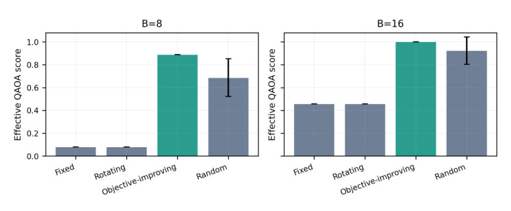
<figcaption class="paper-figure-caption"><b>Fig 3.</b> FIG. 3. Canonical resource-matched QAOA performance at requested XY-interaction budgets B = 8 and B = 16. Bars show the effective QAOA score for the deterministic mixer policies and the mean score across random-disjoint schedule seeds; error bars indicate the corresponding variability where applicable. Despite matching the requested interaction budget, the mixer allocations produce substantially different shallow-QAOA performance.</figcaption>
</figure>
<figure class="paper-figure-card">
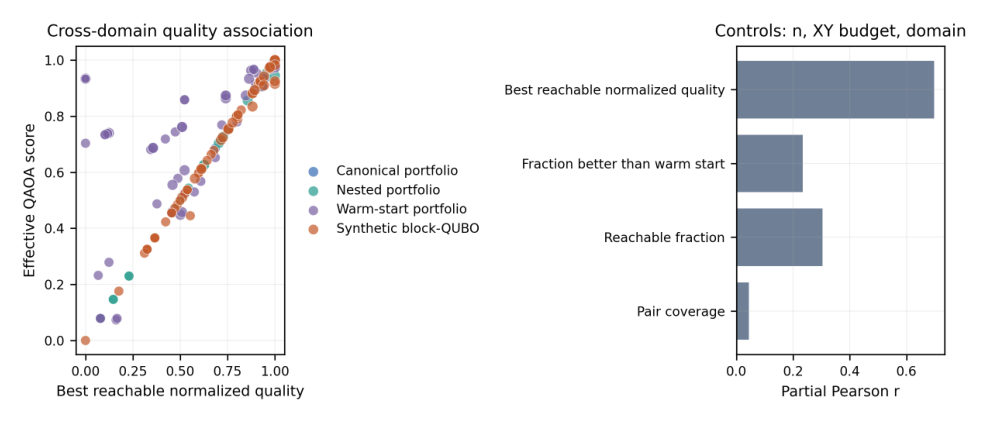
<figcaption class="paper-figure-caption"><b>Fig 4.</b> FIG. 4. Cross-domain relationship between finite-depth reachable quality and realized shallow-QAOA performance. Left: effective QAOA score Seff versus best reachable normalized quality QR across the 207 completed portfolio and synthetic QAOA configurations. Right: partial Pearson associations between Seff and the structural diagnostics after controlling for problem size n, executed XY-interaction budget, and problem domain. Among the tested diagnostics, QR shows the strongest controlled association with realized performance. The associations are observational rather than causal.</figcaption>
</figure>
<figure class="paper-figure-card">
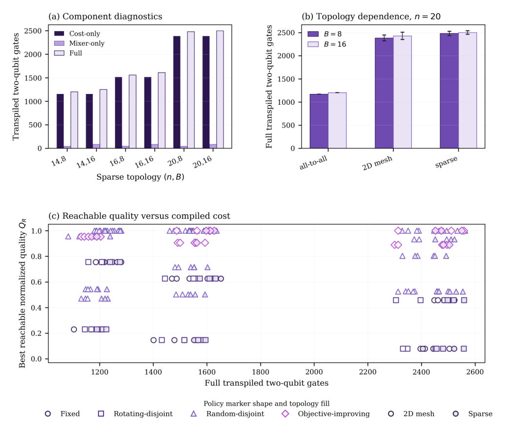
<figcaption class="paper-figure-caption"><b>Fig 5.</b> FIG. 5. Compilation diagnostics for the nested portfolio circuits. (a) Two-qubit gate counts for the separately transpiled cost, mixer, and full circuits on the sparse hardware-inspired topology. (b) Full-circuit two-qubit counts for n = 20 across the three connectivity models and the two logical XY budgets. Error bars show the sample standard deviation across the retained compiled rows in each topology–budget group. (c) Best reachable normalized quality QR versus full transpiled two-qubit gate count for the connectivity-constrained cases; marker shape identifies the mixer policy and marker fill distinguishes the two- dimensional mesh from the sparse hardware-inspired topology.</figcaption>
</figure>
</div>
<p><strong>Summary.</strong> This work develops a diagnostic framework to measure 'finite-depth accessibility' in constrained QAOA, focusing on which solutions are structurally available given a limited circuit depth. By defining the accessible set $R_p$ and the diagnostic $Q_R$, the authors show that this structural measure correlates strongly with actual performance, offering a vital tool for resource-bounded quantum algorithm design.</p>
<p><strong>Why it may be interesting.</strong> It provides a rigorous, structural diagnostic ($Q_R$) that quantifies the <em>opportunity</em> for optimization based on the actual circuit structure, which is crucial for designing resource-constrained quantum algorithms.</p>
<details>
<summary>Detailed structure</summary>
<p><strong>Main problem.</strong> The paper investigates the structural limitations of Constrained QAOA at finite circuit depth, moving beyond simple feasibility or global connectivity analyses.</p>
<p><strong>Main result.</strong> A normalized reachable-quality diagnostic ($Q_R$) shows the strongest correlation with realized shallow-QAOA performance, suggesting objective-relevant accessibility is a key metric.</p>
<p><strong>Method.</strong> The authors define the finite-depth accessible set $R_p(M, x_0)$ based on the executed mixer schedule and derive metrics like $Q_R$ to quantify the objective quality within this structurally accessible region.</p>
<p><strong>Model / system.</strong> The model is the Constrained Quantum Approximate Optimization Algorithm (QAOA) applied to combinatorial optimization problems with hard constraints. The evolution is governed by a fixed initial state, a finite depth $p$, and a specific schedule of mixer interactions.</p>
<p><strong>Key observables.</strong> Finite-depth accessible set $R_p(M, x_0)$, best structurally accessible objective $f^\star_R$, and the normalized reachable-quality diagnostic $Q_R$.</p>
<p><strong>Important parameters / regimes.</strong> Circuit depth ($p$), initial state ($x_0$), and the specific mixer schedule ($M$).</p>
<p><strong>Assumptions / limitations.</strong> The analysis assumes that the structural accessibility $R_p$ provides a parameter-independent ceiling on the best objective achievable by the fixed circuit structure.</p>
<p><strong>Figures summary.</strong> Figure 1 conceptually distinguishes between global feasible connectivity and finite-depth accessibility, while the text describes the structure of the portfolio benchmark.</p>
<p><strong>Paper structure.</strong> The paper progresses from establishing the need to study finite-depth accessibility beyond mere feasibility, to defining the set $R_p(M, x_0)$ and the diagnostic $Q_R$, and finally validating this framework using resource-matched schedules on portfolio optimization problems.</p>
</details>
<details>
<summary>Abstract</summary>
<p>Constraint-preserving mixers keep QAOA within a feasible subspace, but feasibility and global mixer connectivity do not determine which feasible configurations are available to a particular shallow circuit. We study constrained QAOA at the level of the circuit actually executed: a specified feasible initial state, finite depth, and finite schedule of mixer interactions. We define the finite-depth accessible set $R_p(M,x_0)$ and show that the computational-basis support of the ideal QAOA circuit is contained within it. This gives a parameter-independent objective ceiling $f_R^\star=\max_{x\in R_p}f(x)$ and a normalized reachable-quality diagnostic $Q_R$, separating accessible volume from the objective quality contained within it.   We evaluate this framework using resource-matched block-local XY mixer schedules for constrained portfolio optimization and synthetic block-constrained quadratic problems. Across 207 favorable-tail CVaR QAOA configurations, $Q_R$ shows the strongest association with realized shallow-QAOA performance among the structural diagnostics considered, with Pearson and Spearman correlations of $0.7003$ and $0.8057$; the relationship remains positive under controlled and dependence-aware analyses. The distinction persists across changes in feasible initialization, portfolio size, and objective family.   A compilation-only study further shows that, for the dense portfolio Hamiltonians considered here, phase-separator routing dominates the compiled two-qubit resource scale, while mixer schedules with comparable compiled two-qubit cost can exhibit markedly different finite-depth accessible quality. These results motivate objective-relevant finite-depth accessibility as a complementary diagnostic for resource-bounded constrained QAOA.</p>
</details>
<p><sub><a href="#top">↑ back to top</a></sub></p>

<p><a id="paper-2610.00847"></a></p>
<h3 id="beyond-ip-pspace-and-qip-pspace-interactive-proofs-in-arbitrary-physical-theories"><a href="http://arxiv.org/abs/2610.00847v1">Beyond IP = PSPACE and QIP = PSPACE: Interactive Proofs in Arbitrary Physical Theories</a></h3>
<p><strong>Authors:</strong> Kishor Bharti<br>
<strong>Type:</strong> theory · <strong>Category:</strong> quantum information and computing · <strong>PDF:</strong> <a href="https://arxiv.org/pdf/2610.00847v1">https://arxiv.org/pdf/2610.00847v1</a><br>
<strong>Analysis basis:</strong> full PDF text, analyzed in chunks</p>
<div class="figure-strip-hint">↔ Scroll figures horizontally</div>
<div class="paper-figures-scroll">
<figure class="paper-figure-card">
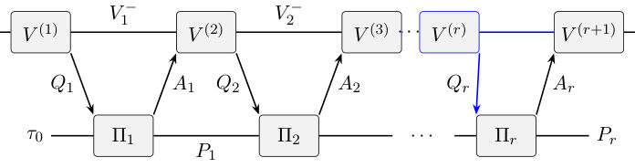
<figcaption class="paper-figure-caption"><b>Fig 1.</b> Figure 2: An r-round protocol. The verifier’s stages V (i) are adaptive circuits of G acting on its private register (top wire); the prover’s channels Πi act on its private system (bottom wire). The verifier and the prover start in independently prepared states ω0 and τ0 and interact only through the message systems Qi and Ai.</figcaption>
</figure>
</div>
<p><strong>Summary.</strong> This work generalizes interactive proof theory to arbitrary physical theories, questioning the physical origin of computational power. It shows that while classical and quantum communication channels restrict the power to $    ext{PSPACE}$, allowing arbitrary message systems can lead to computational classes strictly beyond $    ext{PSPACE}$. This has deep implications for the relationship between physics and computation theory.</p>
<p><strong>Why it may be interesting.</strong> It directly addresses the foundational question of whether computational complexity classes are fundamentally limited by the laws of physics (quantum mechanics vs. classical physics) governing the communication channels.</p>
<details>
<summary>Detailed structure</summary>
<p><strong>Main problem.</strong> The paper investigates how the power of interactive proof systems (IP/QIP) is constrained by the underlying physical theory used by the prover and verifier, moving beyond the established $  ext{IP} =   ext{PSPACE}$ and $  ext{QIP} =  ext{PSPACE}$ results.</p>
<p><strong>Main result.</strong> While classical messages restrict the class to $   ext{PSPACE}$, allowing arbitrary quantum or non-physical messages can cause the interactive-proof class to strictly exceed $    ext{PSPACE}$.</p>
<p><strong>Method.</strong> The analysis uses a general framework of interactive proofs within probabilistic theories, analyzing the acceptance probability based on the type of messages exchanged (classical, quantum, or arbitrary systems).</p>
<p><strong>Model / system.</strong> The framework studies interactive proofs in general probabilistic theories ($G$), which are modeled using concepts from convex geometry, defining systems, states, and effects for both classical and quantum settings.</p>
<p><strong>Key observables.</strong> The acceptance probability of the interactive proof protocol, which depends on the message type (classical, quantum, arbitrary systems).</p>
<p><strong>Important parameters / regimes.</strong> The bias parameter $v \in (0, 1)$ used in constructing specific test theories ($  ext{GQ}_v$), and the complexity class $ ext{PSPACE}$.</p>
<p><strong>Assumptions / limitations.</strong> The theories must satisfy standing assumptions, including local tomography and causality, and the verifier's gates must be efficiently computable.</p>
<p><strong>Figures summary.</strong> Not specified in the notes, but Chunk 2 notes mention Figure 1 illustrates the state space of the triangular system $  ext{W}_v$.</p>
<p><strong>Paper structure.</strong> The paper first establishes the general mathematical framework using convex geometry to model physical systems. It then analyzes the complexity class by restricting the message types exchanged (classical, quantum, arbitrary) to derive the main theorems regarding $   ext{PSPACE}$ containment.</p>
</details>
<details>
<summary>Abstract</summary>
<p>The equalities IP = PSPACE and QIP = PSPACE, the latter achievable with three messages, raise a basic question: how much of an interactive proof's power comes from the underlying physical theory? We study interactive proofs in general probabilistic theories, which include classical and quantum theory. The answer depends on what the prover and verifier exchange and how the theory specifies efficient operations. When they exchange only classical messages, protocols in every theory satisfying our standard assumptions decide exactly PSPACE. For protocols with a quantum verifier and quantum messages, allowing a prover to use any theory containing quantum theory does not increase the maximum acceptance probability. Thus, the three-message PSPACE result remains valid against such provers. When messages may be arbitrary systems, the interactive-proof class can strictly exceed PSPACE.</p>
</details>
<p><sub><a href="#top">↑ back to top</a></sub></p>

<p><a id="paper-2610.01141"></a></p>
<h3 id="classical-hardness-of-learning-functions-of-hamiltonians"><a href="http://arxiv.org/abs/2610.01141v1">Classical Hardness of Learning Functions of Hamiltonians</a></h3>
<p><strong>Authors:</strong> Sota Hashimoto, Akinori Kawachi<br>
<strong>Type:</strong> theory · <strong>Category:</strong> quantum information and computing · <strong>PDF:</strong> <a href="https://arxiv.org/pdf/2610.01141v1">https://arxiv.org/pdf/2610.01141v1</a><br>
<strong>Analysis basis:</strong> full PDF text, analyzed in chunks</p>
<div class="figure-strip-hint">↔ Scroll figures horizontally</div>
<div class="paper-figures-scroll">
<figure class="paper-figure-card">
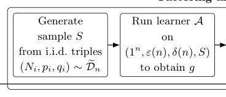
<figcaption class="paper-figure-caption"><b>Fig 1.</b> Figure 1: Reduction from an efficient learner A to a classical factoring algorithm B.</figcaption>
</figure>
</div>
<p><strong>Summary.</strong> This paper proves the average-case classical computational hardness for learning functions of Hamiltonians, a problem motivated by quantum physics. By constructing specific learning tasks related to $\cos(\pi H)$ and $e^{-eta H}$, the authors show that solving these problems efficiently would imply the existence of a classical algorithm to factor large RSA numbers. This sets a strong theoretical lower bound on the classical difficulty of quantum information processing tasks.</p>
<p><strong>Why it may be interesting.</strong> This work is highly relevant as it establishes a fundamental computational barrier for quantum machine learning tasks, showing that solving certain physical prediction problems is as hard as breaking modern cryptography.</p>
<details>
<summary>Detailed structure</summary>
<p><strong>Main problem.</strong> The paper establishes the average-case classical computational hardness for the problem of learning functions of Hamiltonians, $  ext{Tr}[f(H)
ho]$, from classical descriptions of $H$ and $
ho$.</p>
<p><strong>Main result.</strong> It rigorously proves that if an efficient classical learner exists for two specific Hamiltonian function learning problems ($f_{\cos, \pi}$ and $f_{\exp, eta}$), then a classical randomized polynomial-time algorithm for factoring random RSA moduli must also exist.</p>
<p><strong>Method.</strong> The proof employs a cryptographic reduction strategy, linking the learnability of the quantum function to the difficulty of factoring large composite numbers, relying on the structure of Shor's algorithm.</p>
<p><strong>Model / system.</strong> The model involves quantum systems described by a Hamiltonian $H$ and a state $
ho$, where the target observable is $   ext{Tr}[f(H)
ho]$. The hardness proof utilizes specific Hamiltonians $H_{N,j,b}$ constructed from the acceptance projector of a factoring circuit.</p>
<p><strong>Key observables.</strong> The key observables are the expectation values $   ext{Tr}[\cos(\pi H)
ho]$ and $  ext{Tr}[e^{-eta H}
ho]$, whose distinct values allow for the recovery of the factors of an RSA modulus.</p>
<p><strong>Important parameters / regimes.</strong> The hardness relies on the average-case hardness of factoring random RSA moduli, and the analysis involves error parameters $\epsilon(n)$ and $\delta(n)$ related to the learning approximation.</p>
<p><strong>Assumptions / limitations.</strong> The primary assumption is the average-case hardness of factoring random RSA moduli. It also assumes the existence of an efficient classical randomized learner under squared loss.</p>
<p><strong>Figures summary.</strong> Figure 1 summarizes the reduction, showing how an efficient learner $A$ applied to i.i.d. triples $(N_i, p_i, q_i)$ yields a hypothesis $g$ used to recover the factor of $N$ by comparing $g(x_{N,j,0})$ and $g(x_{N,j,1})$.</p>
<p><strong>Paper structure.</strong> The paper introduces the Hamiltonian function learning problem, details the construction of two specific hard instances ($L_{\cos, \pi}$ and $L_{\exp, eta}$), and then executes the cryptographic reduction, showing that learnability implies the ability to factor RSA moduli.</p>
</details>
<details>
<summary>Abstract</summary>
<p>Morohoshi, Nakayama, Manabe, and Mitarai proposed a physically motivated quantum machine learning problem in which the goal is to predict quantities of the form $\operatorname{Tr}[f(H)ρ]$ from classical descriptions of a Hamiltonian $H$ and a quantum state $ρ$, where $f$ is an unknown function. We call this problem Hamiltonian function learning in this paper. They constructed an efficient quantum learning algorithm under suitable conditions, while leaving a rigorous proof of average-case classical hardness open. In this paper, we rigorously prove the average-case classical hardness for two distribution-specific Hamiltonian function learning problems for $f_{\cos,π}(λ)=\cos(πλ)$ and $f_{\exp,β}(λ)=e^{-βλ}$ discussed in the paper of Morohoshi et al. under the assumption of the average-case hardness of factoring random RSA moduli. More specifically, we show that an efficient classical randomized learner under squared loss whose output hypotheses are evaluable in classical polynomial time for either problem would yield a classical randomized polynomial-time algorithm for factoring random RSA moduli.</p>
</details>
<p><sub><a href="#top">↑ back to top</a></sub></p>

<p><a id="paper-2610.00464"></a></p>
<h3 id="clifford-hierarchy-stabilizer-formalism-with-applications-to-twisted-quantum-doubles"><a href="http://arxiv.org/abs/2610.00464v1">Clifford-hierarchy stabilizer formalism with applications to twisted quantum doubles</a></h3>
<p><strong>Authors:</strong> Christopher Fechisin, Kieran Cooney, Mathi Raja, Victor V. Albert, Dominic J. Williamson, Kyle Kawagoe, Seth Musser<br>
<strong>Type:</strong> theory · <strong>Category:</strong> quantum information and computing · <strong>PDF:</strong> <a href="https://arxiv.org/pdf/2610.00464v1">https://arxiv.org/pdf/2610.00464v1</a><br>
<strong>Analysis basis:</strong> full PDF text, analyzed in chunks</p>
<div class="figure-strip-hint">↔ Scroll figures horizontally</div>
<div class="paper-figures-scroll">
<figure class="paper-figure-card">
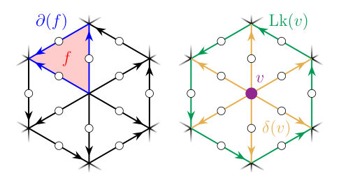
<figcaption class="paper-figure-caption"><b>Fig 1.</b> Figure 1. The geometry associated to the twisted quantum double stabilizers B(f) (left) and Aω g (v) (right) defined in Eqs. 4 and 6, for an example triangulation. All colored edges are in the support of the corresponding stabilizer.</figcaption>
</figure>
<figure class="paper-figure-card">
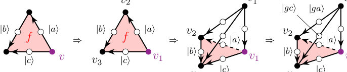
<figcaption class="paper-figure-caption"><b>Fig 2.</b> Figure 2. A depiction of the procedure used to evaluate the 3-cocycle on a triangle f. In order to evaluate the phase ω|f associated to the face f adjacent to the vertex v at which Aω g (v) is being applied, we perform the following algorithm [52]. Step 1. Label the vertices of the face f with labels vi, such that the branching structure gives the ordering v1 &lt; v2 &lt; v3. Step 2. Introduce a new vertex v′ i corresponding to the vertex vi at which Aω g (v) is being applied. (This is the purple vertex in the figure.) With four vertices, we now have a tetrahedron. The new edges should be oriented so that v′ i appears immediately before vi in the ordering. Step 3. Place the state |g⟩on the edge...</figcaption>
</figure>
<figure class="paper-figure-card">
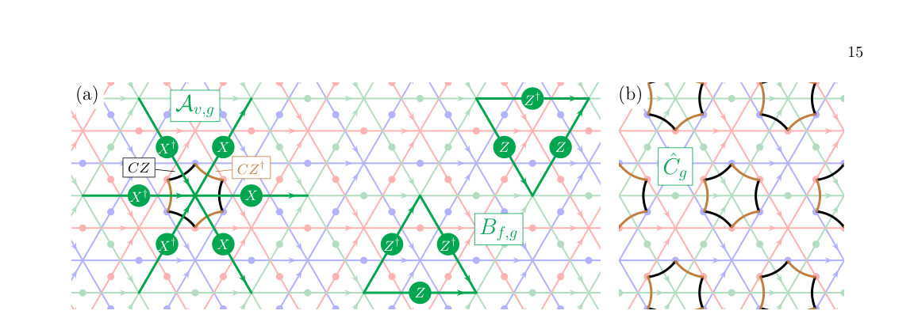
<figcaption class="paper-figure-caption"><b>Fig 3.</b> Figure 3. (a) One layer of stabilizer generators of the TQD DωIII(Z3 p). The stabilizer generators in the other layers are defined analogously. (b) The product of all TQD vertex generators in the green layer is ˆCg, a diagonal operator which is only supported on the red and blue layers. Given a pair of Zp toric codes in the red and blue layers, ˆCg acts as a nontrivial logical operator on this code.</figcaption>
</figure>
<figure class="paper-figure-card">
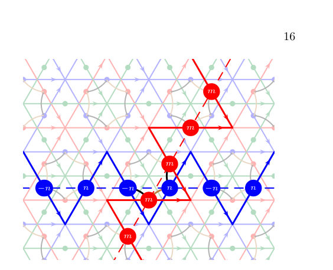
<figcaption class="paper-figure-caption"><b>Fig 4.</b> Figure 4. We take a representative state in the |m⟩rV |n⟩bH homology class, where all qudits not explicitly labeled are taken to be |0⟩. We draw the three local operators which contribute a nontrivial phase to ˆCg in full saturation. These phases multiply to ζ−mn, producing an effective logical action CZ † rV ,bH.</figcaption>
</figure>
<figure class="paper-figure-card">
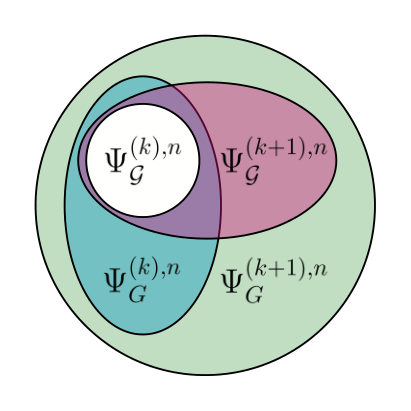
<figcaption class="paper-figure-caption"><b>Fig 5.</b> Figure 5. The structure of inclusions for the sets of stabilizer states defined in Def. B.1 for a generic k and n. We do not display k′ &lt; k or k′ &gt; k + 1 and consider only a fixed number of qudits n.</figcaption>
</figure>
</div>
<p><strong>Summary.</strong> This paper introduces the $X\mathcal{C}^{(k)}_d$ stabilizer formalism to analyze topological quantum codes beyond the standard Pauli model, specifically targeting Twisted Quantum Double (TQD) phases. The authors classify these states and determine the minimum stabilizer level required to realize complex topological orders. This provides a concrete, generalized framework for building and understanding topological quantum memory and gates.</p>
<p><strong>Why it may be interesting.</strong> This work provides a deep mathematical link between abstract group theory (quantum doubles) and the physical realization of topological quantum error-correcting codes, which is central to fault-tolerant quantum computation.</p>
<details>
<summary>Detailed structure</summary>
<p><strong>Main problem.</strong> The paper develops a generalized stabilizer formalism to analyze topological quantum codes beyond the standard Pauli stabilizer model, specifically addressing twisted quantum double (TQD) phases.</p>
<p><strong>Main result.</strong> It establishes the $X\mathcal{C}^{(k)}_d$ stabilizer formalism, showing that many TQD phases can be realized using Clifford stabilizers, and providing a concrete framework for topological codes beyond Pauli stabilizers.</p>
<p><strong>Method.</strong> The authors use group theory, Clifford hierarchy analysis, and stabilizer formalism to classify states and determine the minimal stabilizer level required to encode specific topological orders.</p>
<p><strong>Model / system.</strong> The focus is on Clifford-hierarchy stabilizer models, which generalize Pauli stabilizers by incorporating diagonal operators from higher levels of the Clifford hierarchy on prime-dimensional qudits. These models are applied to study Twisted Quantum Double (TQD) phases, which host non-abelian anyons.</p>
<p><strong>Key observables.</strong> The minimal level $k$ of the stabilizer code, the structure of the 3-cocycle $\omega$, and the resulting topological order (e.g., $2D$ TQD $D_{\omega}(\mathbb{Z}_n^p)$).</p>
<p><strong>Important parameters / regimes.</strong> The prime dimension $p$ of the qudits, the level $k$ of the Clifford hierarchy, and the structure of the cocycle $\omega$ (Type-I, Type-II, Type-III).</p>
<p><strong>Assumptions / limitations.</strong> The analysis relies on the equivalence between certain quantum doubles $D(G)$ and $D_{\omega}(A)$ when $G$ is nil-2, and conjectures regarding the required stabilizer level for specific cocycle types.</p>
<p><strong>Figures summary.</strong> Figures illustrate the geometry of TQD stabilizers, the algorithm for computing the 3-cocycle $\omega|f$ on a face, and the action of logical operators on the codespace.</p>
<p><strong>Paper structure.</strong> The paper progresses by first introducing the generalized $X\mathcal{C}^{(k)}_d$ formalism, then applying it to characterize TQD models by relating the required stabilizer level $k$ to the cocycle structure $\omega$, and finally drawing connections to the algebraic structure of the underlying quantum double groups $D(G)$.</p>
</details>
<details>
<summary>Abstract</summary>
<p>Recent work has shown that quantum double models can be used to circumvent the Bravyi-Koenig bound. In particular, this is achieved through code-switching protocols in which non-Pauli stabilizer phases appear as intermediate codes. We introduce the $X\mathcal C^{(k)}_d$ stabilizer formalism, which generalizes the Pauli stabilizer formalism by combining Pauli-$X$ operators with diagonal operators drawn from a fixed level $k$ of the Clifford hierarchy on prime-dimensional qudits. This yields a natural class of beyond-Pauli stabilizer models, including many twisted quantum double phases. We classify a large class of these $X\mathcal C^{(k)}_d$ stabilizer states, showing that they are uniform superpositions over affine-linear subspaces with diagonal phases. In particular, when the stabilizers of a state require operators from level $k$ of the Clifford hierarchy, we show that the diagonal gates required to produce the phases in the wavefunction sit one level higher. We further show that every 2D twisted quantum double ${\cal D}^ω(\mathbb{Z}_p^n)$ with $ω$ a product of type-III cocycles and $p$ an odd prime admits a realization using only Clifford ($k=2$) stabilizers, and we conjecture that phases where $ω$ contains a type-I or type-II cocycle require level-$p$ Clifford-hierarchy stabilizers for $p$-dimensional qudits. Finally, we demonstrate that a pair of qudit toric codes may be deterministically prepared in a logical magic state by measuring $X\mathcal C^{(k)}_d$ stabilizers. Together, these results provide a concrete stabilizer framework for topological codes beyond Pauli stabilizer models and their logical gates.</p>
</details>
<p><sub><a href="#top">↑ back to top</a></sub></p>

<p><a id="paper-2610.02037"></a></p>
<h3 id="complexity-and-applications-of-nearest-stabilizer-product-state-problems"><a href="http://arxiv.org/abs/2610.02037v1">Complexity and Applications of Nearest Stabilizer Product State Problems</a></h3>
<p><strong>Authors:</strong> Daniel Grier, Hakop Pashayan, Luke Schaeffer<br>
<strong>Type:</strong> theory · <strong>Category:</strong> quantum information and computing · <strong>PDF:</strong> <a href="https://arxiv.org/pdf/2610.02037v1">https://arxiv.org/pdf/2610.02037v1</a><br>
<strong>Analysis basis:</strong> full PDF text, analyzed in chunks</p>
<div class="figure-strip-hint">↔ Scroll figures horizontally</div>
<div class="paper-figures-scroll">
<figure class="paper-figure-card">
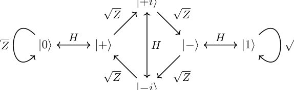
<figcaption class="paper-figure-caption"><b>Fig 1.</b> Figure 2: The six single-qubit stabilizer states. The arrows indicate the transitions under the Hadamard (H) and phase ( √</figcaption>
</figure>
</div>
<p><strong>Summary.</strong> This work tackles the Nearest Stabilizer Product State problem, which measures how close a complex stabilizer state is to a simple product state. By classifying the problem based on the allowed single-qubit components, the authors prove that most non-trivial instances are NP-complete. This has implications for understanding the computational difficulty of quantifying entanglement and simulating quantum systems.</p>
<p><strong>Why it may be interesting.</strong> The rigorous complexity classification of an optimization problem related to quantum state decomposition provides fundamental theoretical bounds for simulating quantum circuits and understanding entanglement structure.</p>
<details>
<summary>Detailed structure</summary>
<p><strong>Main problem.</strong> The paper analyzes the Nearest Stabilizer Product State (NSPS) problem, which involves maximizing the overlap between a given stabilizer state and a product state formed from a restricted set of single-qubit stabilizer states.</p>
<p><strong>Main result.</strong> The complexity of the NSPS problem is classified, showing that most non-trivial choices of single-qubit stabilizer sets lead to NP-complete decision problems.</p>
<p><strong>Method.</strong> The authors use complexity theory, group theory (Clifford group actions), and connections to graph theory (vertex cover number) to classify the problem's hardness.</p>
<p><strong>Model / system.</strong> The system is defined over $n$-qubit stabilizer states $|\psi
angle$ and the optimization is performed over product states $\Pi_{S,k}$ constructed from a restricted set $S$ of single-qubit stabilizer states.</p>
<p><strong>Key observables.</strong> The maximum overlap squared, $m(\psi, \Pi_{S,k})$, and related entanglement measures like $E_{sg}$ and $E_{ss}$.</p>
<p><strong>Important parameters / regimes.</strong> The structure of the set $S$ (classified into 9 representatives) and the number of qubits $n$.</p>
<p><strong>Assumptions / limitations.</strong> The analysis is restricted to the domain of stabilizer states, and the classification relies on symmetries under local Clifford unitaries.</p>
<p><strong>Figures summary.</strong> Figures illustrate the connectivity of single-qubit stabilizer states under Clifford gates and list the elements belonging to specific orbits of subsets of Pauli operators.</p>
<p><strong>Paper structure.</strong> The paper first defines the NSPS problem and its relation to entanglement measures. It then classifies the possible sets $S$ under local Clifford conjugation, leading to a complexity classification of the problem, and finally connects these results to known hard problems like vertex cover.</p>
</details>
<details>
<summary>Abstract</summary>
<p>Consider the following optimization problem over stabilizer product states: given an $n$-qubit stabilizer state $\left|ψ\right\rangle$ and a set of single-qubit stabilizer states $S$, maximize $\left|\langle ψ| φ_1, \ldots, φ_n \rangle\right|^2$ over single-qubit stabilizer states $\left|φ_i\right\rangle \in S$. By varying the set $S$, we show that solutions to this problem can be useful in a variety of settings: tighter runtime bounds for certain classical simulation algorithms; measures of entanglement; and the complexity of low-rank matrix completion. Moreover, we give a complete complexity classification of this nearest stabilizer product state problem. After accounting for the symmetries in the Clifford group, there are $9$ distinct possible sets $S$, and we show that all but the two simplest of these are $\NP$-complete.</p>
</details>
<p><sub><a href="#top">↑ back to top</a></sub></p>

<p><a id="paper-2610.00772"></a></p>
<h3 id="conditioning-on-subalgebras-entropy-duality-and-generalized-quantum-steins-lemma-in-von-neumann-algebras"><a href="http://arxiv.org/abs/2610.00772v1">Conditioning on Subalgebras - Entropy Duality and Generalized Quantum Stein's Lemma in von Neumann Algebras</a></h3>
<p><strong>Authors:</strong> Bjarne Bergh, Li Gao, Mizanur Rahaman<br>
<strong>Type:</strong> theory · <strong>Category:</strong> quantum information and computing · <strong>PDF:</strong> <a href="https://arxiv.org/pdf/2610.00772v1">https://arxiv.org/pdf/2610.00772v1</a><br>
<strong>Analysis basis:</strong> full PDF text, analyzed in chunks</p>
<div class="figure-strip-hint">↔ Scroll figures horizontally</div>
<div class="paper-figures-scroll">
<figure class="paper-figure-card">
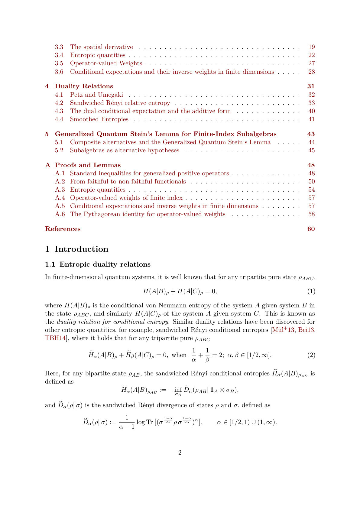
<figcaption class="paper-figure-caption"><b>Fig 1.</b> Low-resolution page preview, page 2</figcaption>
</figure>
<figure class="paper-figure-card">
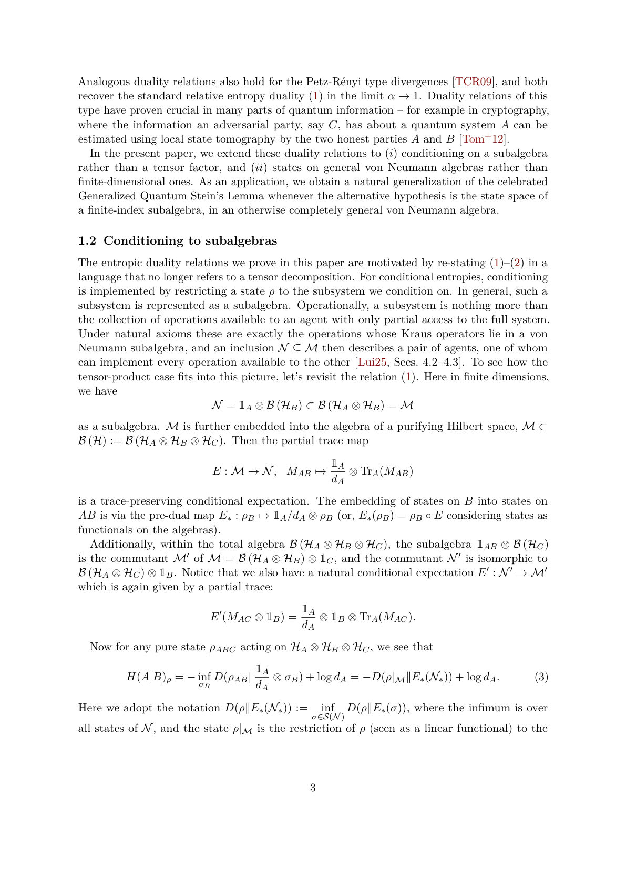
<figcaption class="paper-figure-caption"><b>Fig 2.</b> Low-resolution page preview, page 3</figcaption>
</figure>
<figure class="paper-figure-card">
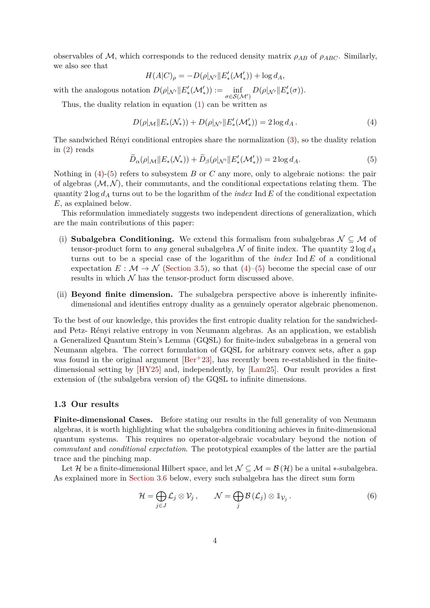
<figcaption class="paper-figure-caption"><b>Fig 3.</b> Low-resolution page preview, page 4</figcaption>
</figure>
<figure class="paper-figure-card">

<figcaption class="paper-figure-caption"><b>Fig 4.</b> Low-resolution page preview, page 5</figcaption>
</figure>
<figure class="paper-figure-card">

<figcaption class="paper-figure-caption"><b>Fig 5.</b> Low-resolution page preview, page 6</figcaption>
</figure>
</div>
<p><strong>Summary.</strong> This paper develops advanced mathematical duality relations for conditional entropies and divergences within the abstract framework of von Neumann algebras. By generalizing results from simple tensor products to arbitrary subalgebras, it extends the theory to infinite dimensions. The key application is establishing an infinite-dimensional Quantum Stein's Lemma, providing a rigorous measure for optimal error exponents in quantum hypothesis testing.</p>
<p><strong>Why it may be interesting.</strong> This work provides deep mathematical tools for quantifying information loss and distinguishability in complex, non-factorizable quantum systems, which is foundational for understanding quantum error correction and quantum channel capacity.</p>
<details>
<summary>Detailed structure</summary>
<p><strong>Main problem.</strong> The paper establishes duality relations for conditional entropies and divergences relative to arbitrary subalgebras within von Neumann algebras, generalizing results from simple tensor-product subsystems.</p>
<p><strong>Main result.</strong> It extends these duality relations to the fully infinite-dimensional setting and establishes an infinite-dimensional extension of Quantum Stein's Lemma for finite-index subalgebras.</p>
<p><strong>Method.</strong> The approach uses algebraic methods involving conditional expectations ($E: \mathcal{M} 	o \mathcal{N}$) and their dual maps ($E^*, E^{-1}$) to reformulate entropy relations, moving beyond simple tensor product structures.</p>
<p><strong>Model / system.</strong> The mathematical framework is built upon von Neumann algebras ($\mathcal{M}$) and their subalgebras ($\mathcal{N}$), representing abstract quantum systems where conditioning is defined algebraically rather than geometrically.</p>
<p><strong>Key observables.</strong> Conditional von Neumann entropy, Sandwiched- and Petz-Rényi divergences, and the optimal asymptotic error exponent in quantum hypothesis testing.</p>
<p><strong>Important parameters / regimes.</strong> The index of the conditional expectation ($ ext{Ind } E$) and the parameters ($\alpha$) defining the Rényi divergences.</p>
<p><strong>Assumptions / limitations.</strong> The results rely on the existence of a normal faithful conditional expectation of finite index, particularly for the generalization to infinite dimensions and the Quantum Stein's Lemma application.</p>
<p><strong>Figures summary.</strong> No figures or captions were analyzed; the notes describe the mathematical development through theorems and corollaries.</p>
<p><strong>Paper structure.</strong> The paper develops the argument by first reviewing known finite-dimensional tensor-product results, then reformulating them algebraically for general subalgebras, and finally generalizing the structure to infinite-dimensional von Neumann algebras, culminating in the Quantum Stein's Lemma extension.</p>
</details>
<details>
<summary>Abstract</summary>
<p>We establish duality relations for conditional entropies relative to subalgebras of arbitrary von Neumann algebras, including the Umegaki relative entropy as well as the sandwiched- and Petz-Rényi divergences. Even in finite dimensions, these results extend the familiar dualities for conditional entropies from tensor-product subsystems to general subalgebras, while also lifting the framework to the fully infinite-dimensional setting. As an application, we establish an infinite-dimensional extension of quantum Stein's lemma when the alternative hypothesis is the state space of a finite-index subalgebra, which gives an operational interpretation of the relative entropy to a subalgebra as the optimal asymptotic error exponent in composite quantum hypothesis testing-the first beyond finite dimensions.</p>
</details>
<p><sub><a href="#top">↑ back to top</a></sub></p>

<p><a id="paper-2610.01099"></a></p>
<h3 id="constant-per-layer-depth-mps-pretrained-ansatz-for-noisy-distributed-quantum-processors"><a href="http://arxiv.org/abs/2610.01099v1">Constant-Per-Layer-Depth MPS-Pretrained Ansatz for Noisy Distributed Quantum Processors</a></h3>
<p><strong>Authors:</strong> Seongpyo Hong, Woodo Lee, Yong-Su Kim, Seung-Sup B. Lee, Junghyun Lee<br>
<strong>Type:</strong> theory · <strong>Category:</strong> quantum information and computing · <strong>PDF:</strong> <a href="https://arxiv.org/pdf/2610.01099v1">https://arxiv.org/pdf/2610.01099v1</a><br>
<strong>Analysis basis:</strong> full PDF text, analyzed in chunks</p>
<div class="figure-strip-hint">↔ Scroll figures horizontally</div>
<div class="paper-figures-scroll">
<figure class="paper-figure-card">

<figcaption class="paper-figure-caption"><b>Fig 1.</b> Fig. 1 Overview of tensor-network–assisted circuit design and the impact of depth-dependent deco- herence. (a) Schematic workflow: a classically optimized tensor-network state (illustrated here for an MPS) is mapped onto a gate-based parametrized circuit and deployed on a distributed quantum processor comprising multiple QPUs. (b) Illustration of a noisy quantum circuit, and representative trends showing purity decay with an increasing number of layers and the resulting degradation of variational optimization. The purity plot reports the mean over 10,000 random-circuit realizations, with error bars indicating one standard deviation, whereas the ideal and noisy optimization curves show...</figcaption>
</figure>
<figure class="paper-figure-card">

<figcaption class="paper-figure-caption"><b>Fig 2.</b> Fig. 2 Illustration of the three structured ansatzes considered in this work: ladder, mixed-canonical, and brick-wall. Each layer comprises N −1 two-qubit unitary blocks, but the parallelization strategy differs, resulting in distinct per-layer circuit depths: D = N −1 (ladder), D = ⌈N/2⌉(mixed- canonical), and D = 2 (brick-wall), where each brick-wall layer consists of one odd and one even sublayer.</figcaption>
</figure>
<figure class="paper-figure-card">

<figcaption class="paper-figure-caption"><b>Fig 3.</b> Fig. 3 Ideal-circuit benchmarks of energy convergence and gradient-variance diagnostics of the three structured ansatzes. Left: Noise-free VQE convergence of the relative energy error |(E −Eg)/Eg| for the (a) ladder, (b) mixed-canonical, (c) brick-wall ansatzes with a fixed total layer number L = 4. Results are shown for different combinations of the number of pretrained layers K and the MPS bond dimension χ (see legend). Solid lines denote the mean over 20 independent random initializations, and shaded regions indicate the corresponding min–max range (see Methods for initialization details). Right: Gradient-variance diagnostics, computed as the unbiased sample variance over 100 independent...</figcaption>
</figure>
<figure class="paper-figure-card">

<figcaption class="paper-figure-caption"><b>Fig 4.</b> Fig. 4 Ideal MPS-to-circuit encoding infidelity for the twisted Heisenberg target MPS. (a) State infidelity, 1 −F, as a function of system size for fixed χ = 8 and K = 4. (b) State infidelity as a function of the number of encoding layers K for fixed χ = 8 and N = 50. The fidelity is computed between the target MPS and the corresponding circuit-prepared state for the three structured circuit layouts. Markers show the mean over six restarts of the encoding optimization and error bars the min–max range (Supplementary Information). Here, K denotes the number of circuit layers optimized to encode the target MPS; the same layers serve as the pretrained layers in the VQE calculations.</figcaption>
</figure>
<figure class="paper-figure-card">

<figcaption class="paper-figure-caption"><b>Fig 5.</b> Fig. 5 Gate noise model and its impact on variational optimization. (a) Schematic of the noise model used in this work: after each decomposed gate G, the biased Pauli channel EP and the thermal- relaxation channel ET are applied, while idle intervals are modeled by ET alone. (b) Representative noisy VQE convergence of the relative energy error, |(E −Eg)/Eg|, for the three structured ansatzes. The dotted horizontal line indicates the mean endpoint relative energy error over 20 noiseless VQE runs of the ladder ansatz at the same (L, K, χ) = (3, 2, 8) setting, with each noiseless run optimized for 20,000 Adam iterations.</figcaption>
</figure>
</div>
<p><strong>Summary.</strong> This work establishes a framework for designing variational quantum circuits on modular quantum hardware by co-designing the ansatz, circuit scheduling, and communication topology. By comparing different MPS-based ansatzes, the authors show that depth-efficient architectures like the brick-wall are superior under noise. The results provide critical guidelines for scaling VQE to multi-QPU systems.</p>
<p><strong>Why it may be interesting.</strong> It provides concrete, hardware-aware guidelines for designing variational quantum circuits, which is crucial for realizing algorithms on near-term, noisy quantum hardware.</p>
<details>
<summary>Detailed structure</summary>
<p><strong>Main problem.</strong> The paper addresses the challenge of scaling variational quantum algorithms on noisy, distributed quantum processors by developing hardware-aware co-design principles.</p>
<p><strong>Main result.</strong> The shallower brick-wall ansatz outperforms other circuit realizations under noise, and distributed circuits can match or exceed this performance if inter-QPU links realize relevant long-range interactions.</p>
<p><strong>Method.</strong> The study compares different structured ansatzes (ladder, mixed-canonical, brick-wall) for encoding Matrix Product States (MPS) and extends this comparison to modular processors using VQE simulations.</p>
<p><strong>Model / system.</strong> The system involves distributed quantum processors composed of multiple Quantum Processing Units (QPUs) connected by quantum links, simulating a target Hamiltonian like the twisted Heisenberg chain.</p>
<p><strong>Key observables.</strong> Relative energy error, gradient variance, circuit depth, and state fidelity ($F$).</p>
<p><strong>Important parameters / regimes.</strong> Noise strength, inter-QPU communication cost factor ($r$), and two-qubit gate duration ($t_{2q}$).</p>
<p><strong>Assumptions / limitations.</strong> The advantage of distribution relies on the inter-QPU links realizing long-range interactions of the target Hamiltonian, and the comparison assumes matched per-layer two-qubit-block resources.</p>
<p><strong>Figures summary.</strong> Figures illustrate the comparison of ansatzes (depths, convergence) and the performance of distributed architectures under varying communication costs and noise levels.</p>
<p><strong>Paper structure.</strong> The paper first compares ansatzes on a single QPU, establishing the brick-wall's advantage; it then extends this to modular processors, analyzing the impact of nearest-neighbor scheduling and inter-QPU links on overall performance.</p>
</details>
<details>
<summary>Abstract</summary>
<p>Distributed quantum processors could scale variational algorithms beyond single devices, but circuit depth, communication overhead, and noise limit their performance. We compare ladder, mixed-canonical, and brick-wall realizations of matrix-product-state (MPS) pretraining with matched per-layer two-qubit-block resources. Despite comparable ideal variational quantum eigensolver performance and gradient scales, the shallower brick-wall architecture reduces circuit duration, idle-time decoherence, and zero-noise-extrapolation (ZNE) overhead, yielding superior noisy and ZNE-assisted performance. We then extend MPS-pretrained circuits to modular processors with one communication qubit per quantum processing unit (QPU); a nearest-neighbor QPU-path schedule keeps the per-layer depth constant as QPUs are added. Distributed circuits whose inter-QPU links realize long-range interactions of the target Hamiltonian match or outperform the single-processor brick-wall under noise when communication idle time is short compared with the coherence time. These results establish hardware-aware co-design of tensor-network pretraining, circuit scheduling, and communication topology as a principle for variational quantum computation on noisy modular hardware.</p>
</details>
<p><sub><a href="#top">↑ back to top</a></sub></p>

<p><a id="paper-2610.01025"></a></p>
<h3 id="device-independent-conference-keys-from-parity-extended-games"><a href="http://arxiv.org/abs/2610.01025v1">Device-Independent Conference Keys from Parity-Extended Games</a></h3>
<p><strong>Authors:</strong> Suvradip Chakraborty, Ronak Ramachandran, Aniruddha Sen<br>
<strong>Type:</strong> theory · <strong>Category:</strong> quantum information and computing · <strong>PDF:</strong> <a href="https://arxiv.org/pdf/2610.01025v1">https://arxiv.org/pdf/2610.01025v1</a><br>
<strong>Analysis basis:</strong> full PDF text, analyzed in chunks</p>
<div class="figure-strip-hint">↔ Scroll figures horizontally</div>
<div class="paper-figures-scroll">
<figure class="paper-figure-card">

<figcaption class="paper-figure-caption"><b>Fig 1.</b> Figure 1: Alice’s Pauli measurements for outputs a0, a1, a2 ∈{0, 1} on input x ∈{0, 1, 2}.</figcaption>
</figure>
<figure class="paper-figure-card">

<figcaption class="paper-figure-caption"><b>Fig 2.</b> Figure 2: The referee’s corrections to Alice’s outputs for pMSGN.</figcaption>
</figure>
<figure class="paper-figure-card">

<figcaption class="paper-figure-caption"><b>Fig 3.</b> Figure 3: Key rate r = H(A|X = 0, T = 1, E) −h(q/2) as a function of the global depolarizing noise probability q. The per round entropy lower bound for pMSG is computed from Eq. (38) and the techniques of Lemma 6.7. We use a piecewise linear lower bound instead of just a single affine function since we just need a per round bound. The upper bound for pMSG is calculated from the strategy described in the paragraph below. We refer to prior work for a tight entropy upper and lower bound for pCHSH [GMKB23]. The true key rate for pMSG lies in the shaded region. The bars below the graph show which game achieves higher key rate in some noise regime; the middle section is open since our bounds for...</figcaption>
</figure>
<figure class="paper-figure-card">

<figcaption class="paper-figure-caption"><b>Fig 4.</b> Figure 4: Key rate r = H(A|X = 0, T = 1, E) −h(q/2) as a function of the local, per qubit, depolarizing noise probability q, for various values of the number of parties N. The per round entropy lower bound for pMSG is computed from Eq. (44) and the techniques of Lemma 6.7. We use a piecewise linear lower bound instead of just a single affine function since we just need a per round bound. We refer to Eq. (47) and prior work for the (tight) lower bound for pCHSH [GMKB23].</figcaption>
</figure>
</div>
<p><strong>Summary.</strong> This paper introduces Parity-G games, a novel framework to generalize two-player non-local games to $N$ parties for Device-Independent Conference Key Agreement (DI-CKA). By applying this to the Magic Square Game, the authors construct a new DI-CKA protocol that is provably secure and demonstrates a superior key rate compared to existing protocols in the low-noise regime.</p>
<p><strong>Why it may be interesting.</strong> The work provides a general, scalable framework for constructing multi-party quantum cryptographic protocols whose security is certified by non-locality, which is fundamental to quantum information theory.</p>
<details>
<summary>Detailed structure</summary>
<p><strong>Main problem.</strong> Developing scalable and secure Device-Independent Conference Key Agreement (DI-CKA) protocols for $N$ parties, overcoming the limitation of relying on single, multi-party Bell inequalities.</p>
<p><strong>Main result.</strong> The authors introduce Parity-G games, constructing the first DI-CKA protocol based on a pseudo-telepathy game (pMSGN) that achieves a key rate exceeding protocols based on Parity-CHSH in the low noise regime.</p>
<p><strong>Method.</strong> The core method is the Parity-G framework, which generalizes any two-player Pauli game $G$ to $N$ players, allowing security analysis to reduce to the two-party game $G$.</p>
<p><strong>Model / system.</strong> The protocol utilizes untrusted multipartite quantum states shared among $N$ parties, testing non-locality via generalized Pauli games like the Mermin–Peres Magic Square Game (pMSGN).</p>
<p><strong>Key observables.</strong> Key rate ($r_\infty$), winning probability ($\omega$), and conditional von Neumann entropy $H(A|E)$.</p>
<p><strong>Important parameters / regimes.</strong> Noise probability ($q$), number of parties ($N$), and the threshold for non-zero key bits ($\omega_{tol} > 8/9$).</p>
<p><strong>Assumptions / limitations.</strong> The security proof relies on reducing the $N$-party security to the underlying two-party game $G$, and the analysis assumes the existence of an untrusted multipartite state $
ho$.</p>
<p><strong>Figures summary.</strong> Figures illustrate Alice's Pauli measurements for the MSG game and the referee's correction bits for the $pMSGN$ protocol.</p>
<p><strong>Paper structure.</strong> The paper introduces the Parity-G framework, applies it to the Mermin–Peres Magic Square Game to construct the pMSGN-based DI-CKA protocol, proves its security against coherent attacks, and compares its key rate to existing protocols.</p>
</details>
<details>
<summary>Abstract</summary>
<p>Device-independent conference key agreement (DI-CKA) lets a group of parties establish a shared secret key from untrusted quantum devices, with security certified by non-locality. Existing DI-CKA protocols are each built around a single Bell inequality, typically a multiparty variant of the CHSH game. DI-QKD protocols, in contrast, have been built from a much richer landscape of non-local games, and it has remained unclear how to carry this landscape over to the conference setting. We introduce $\textit{Parity-$G$ games}$, which extend any two-player game $G$ to $N$ players, for every $N$, provided $G$ has an optimal strategy in which one player measures Pauli observables. The extension preserves the quantum and classical values of $G$, and the security of the resulting $N$-party protocol follows from an analysis of the two-player game alone. Our framework recovers the Parity-CHSH game of Ribeiro, Murta and Wehner (Phys. Rev. A, 2018) as a special case. Applied to the Mermin--Peres Magic Square Game, it yields a new $N$-player pseudo-telepathy game, the $\textit{Parity Magic Square Game}$, which ideal devices win in every round. We use it to construct the $\textit{first}$ DI-CKA protocol based on a pseudo-telepathy game. We prove the protocol secure against coherent attacks. It produces up to two key bits per round, and at low noise its key rate exceeds that of the DI-CKA protocol based on the Parity-CHSH game.</p>
</details>
<p><sub><a href="#top">↑ back to top</a></sub></p>

<p><a id="paper-2610.01090"></a></p>
<h3 id="effects-of-on-site-gaussian-disorder-in-the-ferromagnetic-blume-capel-model"><a href="http://arxiv.org/abs/2610.01090v1">Effects of on-site Gaussian disorder in the ferromagnetic Blume Capel model</a></h3>
<p><strong>Authors:</strong> Kimberly J. Silverman, Daria Lhommedieu, Alykhan Rajan, Kathryn A. Cooper, Richard T. Scalettar, Eduardo Ibarra-García-Padilla<br>
<strong>Type:</strong> theory · <strong>Category:</strong> disordered systems and neural networks · <strong>PDF:</strong> <a href="https://arxiv.org/pdf/2610.01090v1">https://arxiv.org/pdf/2610.01090v1</a><br>
<strong>Analysis basis:</strong> full PDF text, analyzed in chunks</p>
<div class="figure-strip-hint">↔ Scroll figures horizontally</div>
<div class="paper-figures-scroll">
<figure class="paper-figure-card">

<figcaption class="paper-figure-caption"><b>Fig 1.</b> FIG. 1. (a) Density n and (b) magnetization M as functions of T/J at ¯D/J = 1 for different σ/J.</figcaption>
</figure>
<figure class="paper-figure-card">

<figcaption class="paper-figure-caption"><b>Fig 2.</b> FIG. 2. (a) Specific heat C, (b) magnetic susceptibility χ, and (c) compressibility κ as functions of T/J at ¯D/J = 1 for different σ/J.</figcaption>
</figure>
<figure class="paper-figure-card">

<figcaption class="paper-figure-caption"><b>Fig 3.</b> Fig. 1(a) shows the dependence of density n on the temperature for different amounts of disorder at fixed ¯D/J = 1. At high temperatures, where all spin states are equally probable, n = 2/3. As the temperature is lowered, in the absence of disorder (σ = 0), n increases monotonically to 1, indicating a fully occupied lattice. Increasing σ/J up to 0.3, there is no appreciable change in the density. As σ/J further increases past σ/J = 1,</figcaption>
</figure>
<figure class="paper-figure-card">

<figcaption class="paper-figure-caption"><b>Fig 4.</b> FIG. 3. Tc/J as a function of σ/J at ¯D/J = 1. Blue solid markers: Tc/J extracted from the crossings in the Binder ratio, where error bars are estimated as the difference between the predicted Tc/J from the crossings between L = 64, 48 and L = 64, 32 (see Fig. 9 for an example). Black open markers: Tc/J from the finite-size scaling of the peak locations in χ, with the error bars given from the fit parameters errors. The inset illustrates the finite-size scaling procedure for σ/J = 0, 1, where we fit to a power law Tc(L) = Tc(∞)+bL−ν. Pink dashed line: Tc/J from the LDA analysis given by Eq. (3).</figcaption>
</figure>
<figure class="paper-figure-card">

<figcaption class="paper-figure-caption"><b>Fig 5.</b> FIG. 4. Density n as a function of ¯D/J for selected values of σ/J at T/J = 0.05, 0.1, and 0.15. Filled markers with solid lines indicate forward runs, and open markers with dotted lines indicate backward runs. Backward runs employ a bias field h ≤σ/4 during warmup sweeps to perform annealing and ensure convergence.</figcaption>
</figure>
</div>
<p><strong>Summary.</strong> This paper numerically studies the effect of site-dependent Gaussian disorder on the phase transitions of the Blume-Capel model. Using MCMC simulations, the authors demonstrate that disorder suppresses the first-order transition while only reducing the second-order critical temperature, suggesting the transition remains robustly finite even for large disorder strengths.</p>
<p><strong>Why it may be interesting.</strong> The study provides a detailed quantitative understanding of how quenched disorder fundamentally alters critical phenomena in lattice models, which has parallels in disordered quantum magnets and spin-glass physics.</p>
<details>
<summary>Detailed structure</summary>
<p><strong>Main problem.</strong> The study investigates how introducing site-dependent Gaussian disorder in the crystal field modifies the phase transitions (second-order and first-order) of the ferromagnetic Blume-Capel model.</p>
<p><strong>Main result.</strong> The disorder is shown to reduce the second-order transition temperature ($T_c$) but keeps it finite for large disorder, while it strongly suppresses and can entirely eliminate the first-order phase transition at large disorder strengths.</p>
<p><strong>Method.</strong> The research employs numerical simulations using the Markov Chain Monte Carlo (MCMC) method on a 2D lattice, analyzing various thermodynamic observables and susceptibilities.</p>
<p><strong>Model / system.</strong> The system is the Blume-Capel model, generalized to include site-dependent crystal fields $D_i$ drawn from a Gaussian distribution $P(D_i)$. The Hamiltonian involves nearest-neighbor interactions and local field terms.</p>
<p><strong>Key observables.</strong> Magnetization ($M$), density ($n$), specific heat ($C$), magnetic susceptibility ($\chi$), compressibility ($\kappa$), and the Binder ratio ($U$).</p>
<p><strong>Important parameters / regimes.</strong> Disorder width ($\sigma$), mean disorder ($ar{D}$), lattice size ($L$), and temperature ($T/J$).</p>
<p><strong>Assumptions / limitations.</strong> The analysis relies on MCMC simulations and self-averaging over multiple disorder realizations, avoiding mean-field approximations.</p>
<p><strong>Figures summary.</strong> Figures illustrate the dependence of density, magnetization, specific heat, and susceptibility on temperature and disorder strength, showing the suppression of phase transitions.</p>
<p><strong>Paper structure.</strong> The paper systematically analyzes the effects of disorder on the second-order transition line, then addresses the suppression of the first-order transition, concluding with finite-size scaling and comparison to the Local Density Approximation (LDA).</p>
</details>
<details>
<summary>Abstract</summary>
<p>We conduct a numerical study of a generalization of the Blume-Capel model in which the crystal field $D_i$, which controls the local vacancy density, is site dependent rather than uniform. We employ Markov Chain Monte Carlo to compute the shifted phase transition line $T_c$ as a function of the width $σ$ of a gaussian distribution $P(D_i) \sim \exp( -(D_i - \bar{D})^2/2 σ^2)$ at fixed $\bar{D}$. We characterize how the presence of this on-site Gaussian disorder reduces $T_c$ across the second order transition line, and discuss how our results suggest that $T_c$ remains finite even at large values of $σ$. We also determine the effects of disorder on the tricritical point of the conventional, uniform, Blume-Capel model, finding that it significantly suppresses the first-order phase transition, eliminating it entirely at large values of $σ$.</p>
</details>
<p><sub><a href="#top">↑ back to top</a></sub></p>

<p><a id="paper-2610.01699"></a></p>
<h3 id="efficiently-optimizing-the-quantum-value-of-bell-inequalities-using-batched-gradient-descent"><a href="http://arxiv.org/abs/2610.01699v1">Efficiently Optimizing the Quantum Value of Bell Inequalities using Batched Gradient Descent</a></h3>
<p><strong>Authors:</strong> Xinyu Xu, Ping Zhu, Weikang Li, Pierre Pocreau, Dalu Ding, Dawei Ding<br>
<strong>Type:</strong> theory · <strong>Category:</strong> quantum information and computing · <strong>PDF:</strong> <a href="https://arxiv.org/pdf/2610.01699v1">https://arxiv.org/pdf/2610.01699v1</a><br>
<strong>Analysis basis:</strong> full PDF text, analyzed in chunks</p>
<div class="figure-strip-hint">↔ Scroll figures horizontally</div>
<div class="paper-figures-scroll">
<figure class="paper-figure-card">

<figcaption class="paper-figure-caption"><b>Fig 1.</b> Figure 1: A nonlocal game with parties 1, . . . , np. Each party i receives input si and produces output ai.</figcaption>
</figure>
<figure class="paper-figure-card">

<figcaption class="paper-figure-caption"><b>Fig 2.</b> Figure 2: Amortized single-core BGD time to reach within 1% of ωq over the MaxEnt grid (nin, nout) ∈{2, . . . , 15}2. Each cell reports the wall-clock time for a batch of 100 independent restarts divided by 100; all cells reach the target. The color scale is logarithmic.</figcaption>
</figure>
<figure class="paper-figure-card">

<figcaption class="paper-figure-caption"><b>Fig 3.</b> Figure 3: Mean single-core see-saw time to reach within 1% of ωq over the MaxEnt grid (nin, nout) ∈ {2, . . . , 15}2. Each cell reports the mean first-hit time over successful restarts from at most 10 attempts, each limited to 10 s. Black denotes either an instance for which no restart reached the target within the time limit or an instance left untested because a smaller instance along the corresponding parameter sweep had already failed. The color scale is logarithmic.</figcaption>
</figure>
<figure class="paper-figure-card">

<figcaption class="paper-figure-caption"><b>Fig 4.</b> Figure 4: Best value against wall-clock time for BGD and see-saw on three solved-family instances under matched, dedicated single-core conditions. Each curve is the mean over 10 independent restarts, the shading spans the minimum and maximum, and the dashed line is the analytic quantum value ωq. Each panel gives the game shape (np, nin, nout).</figcaption>
</figure>
<figure class="paper-figure-card">

<figcaption class="paper-figure-caption"><b>Fig 5.</b> Figure 5: Best value against wall-clock time for BGD and see-saw on four unsolved-family instances. Each curve is the mean over 10 independent restarts, the shading spans the minimum and maximum, and the dashed line is the feasible numerical reference q↓. Each panel gives the game shape (np, nin, nout).</figcaption>
</figure>
</div>
<p><strong>Summary.</strong> This paper presents a novel Batched Gradient Descent (BGD) optimizer designed to efficiently calculate the quantum value of complex Bell inequalities. By using direct tensor contraction, BGD overcomes the scaling limitations of previous methods, allowing analysis of systems with thousands of inputs or outputs. This tool is vital for both fundamental quantum testing and practical applications like multi-agent coordination.</p>
<p><strong>Why it may be interesting.</strong> The development of scalable optimization tools for Bell inequalities is crucial for testing fundamental principles of quantum mechanics and designing quantum communication protocols.</p>
<details>
<summary>Detailed structure</summary>
<p><strong>Main problem.</strong> Developing scalable numerical methods to compute the quantum value of Bell inequalities, which are constraints on correlations in local hidden variable theories.</p>
<p><strong>Main result.</strong> The authors introduce a Batched Gradient Descent (BGD) optimizer that efficiently computes the quantum value for large-scale Bell inequalities, achieving significant speedups over existing methods.</p>
<p><strong>Method.</strong> The BGD optimizer is a differentiable search over feasible quantum strategies, evaluating the Bell expression via direct tensor contraction suitable for GPU implementation.</p>
<p><strong>Model / system.</strong> The study focuses on Bell inequalities, which quantify the violation of local realism in nonlocal games involving multiple parties. The quantum value ($\omega_q$) is the maximum quantum violation of these inequalities.</p>
<p><strong>Key observables.</strong> The quantum value ($\omega_q$) and the classical value ($\omega_c$) of the Bell inequality, representing the maximum expected utility of a nonlocal game.</p>
<p><strong>Important parameters / regimes.</strong> The number of parties, inputs, and outputs ($n_p, n_{in}, n_{out}$); the learning rate and conditioning ratio used in BGD.</p>
<p><strong>Assumptions / limitations.</strong> The BGD approach provides a lower bound on $\omega_q$, and the analysis sometimes assumes rank-one projective measurements for tractability.</p>
<p><strong>Figures summary.</strong> The notes reference figures showing time vs. dimension sweeps and schematic representations of nonlocal games.</p>
<p><strong>Paper structure.</strong> The paper progresses from defining the problem (Bell inequalities/nonlocal games) to detailing existing methods (See-saw), introducing the scalable BGD optimizer, and finally providing rigorous mathematical proofs for specific bounds (e.g., CHSH inequality).</p>
</details>
<details>
<summary>Abstract</summary>
<p>Exploring the world of Bell inequalities requires numerical methods that scale effectively with the number of parties, inputs, and outputs. Such methods can be used to study large-scale Bell inequalities beyond the reach of analytic methods, to design experiments for violating more complicated Bell inequalities, and to enable applications of Bell inequality violation. Such applications include randomness generation and multi-agent coordination with restricted communication. However, current general purpose optimizers such as the see-saw method struggle to handle Bell inequalities with only a dozen inputs and outputs. We introduce an optimizer for the quantum value of a Bell inequality based on batched gradient descent (BGD). More precisely, our BGD optimizer is a differentiable search over feasible quantum strategies in which states and projective measurements are generated from unconstrained variables. The Bell expression is evaluated by a direct tensor contraction without forming the prohibitively large Bell operator. This formulation makes parallel random restarts inexpensive and is thus naturally implemented by a GPU. We evaluate our optimizer against the see-saw method and find a significant speedup for a wide variety of Bell inequality families. Implemented on a GPU, our BGD optimizer can optimize Bell inequalities in our numerical experiments with more than a thousand inputs or outputs within minutes. For these large-scale Bell inequalities, we also efficiently compute the classical value by enumerating possible strategies using a GPU or expressing the optimization as a mixed-integer linear program. Our optimizers can serve as numerical evaluation tools for Bell experiments and multi-agent coordination problems modeled by Bell inequalities with many inputs and outputs, a common feature of real-world scenarios such as high frequency trading and distributed systems.</p>
</details>
<p><sub><a href="#top">↑ back to top</a></sub></p>
<hr>
<p>
<a href="index.html">← Index</a>
 · <a href="papers_07.html">← Previous</a> · <a href="papers_09.html">Next →</a>
</p>
<hr>

</body>
</html>
